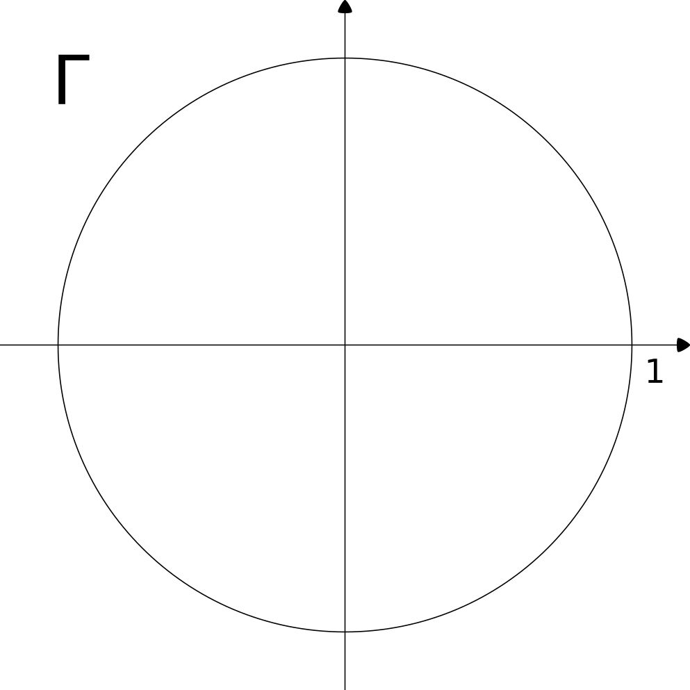
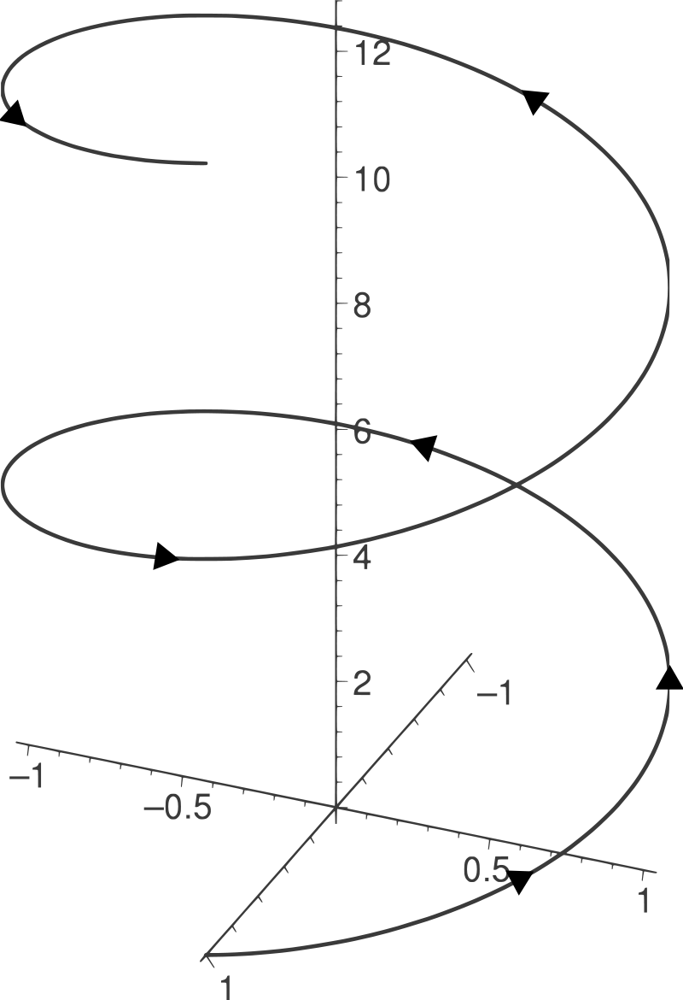
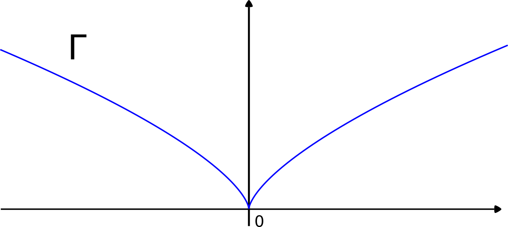
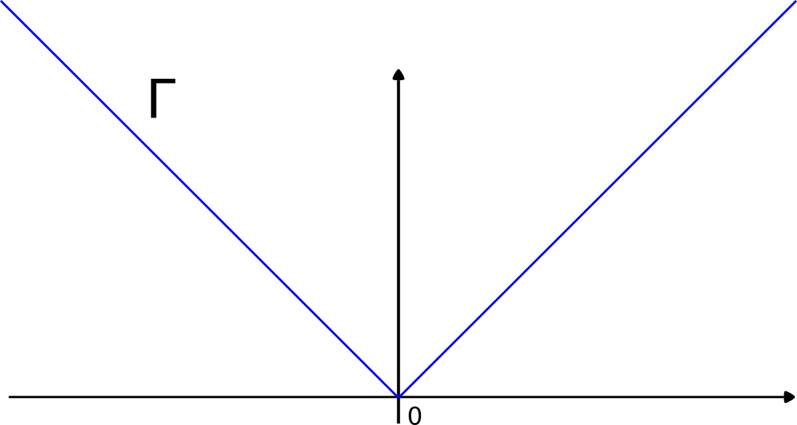
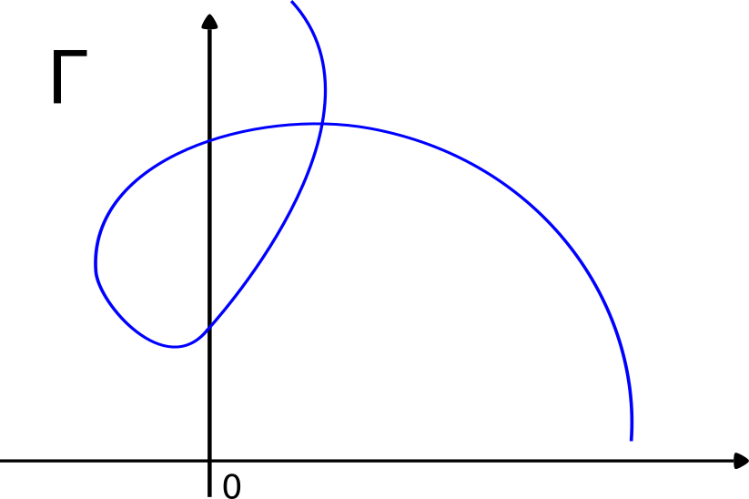
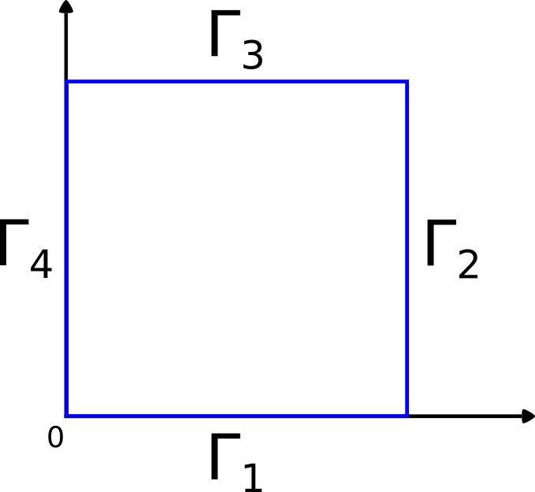
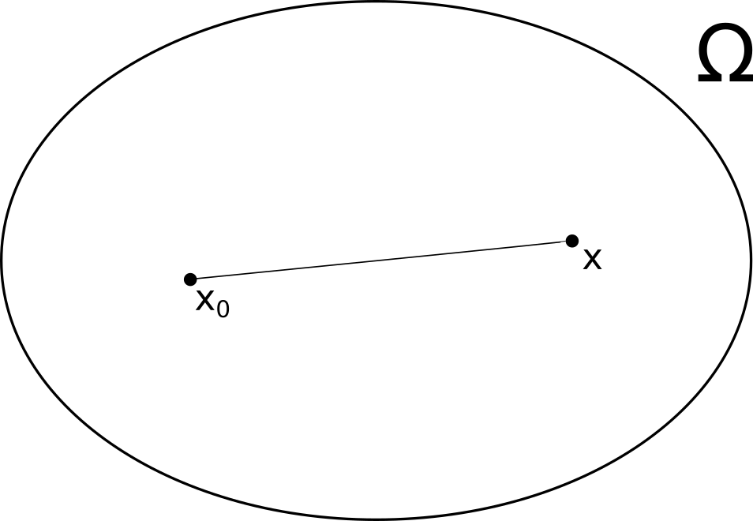
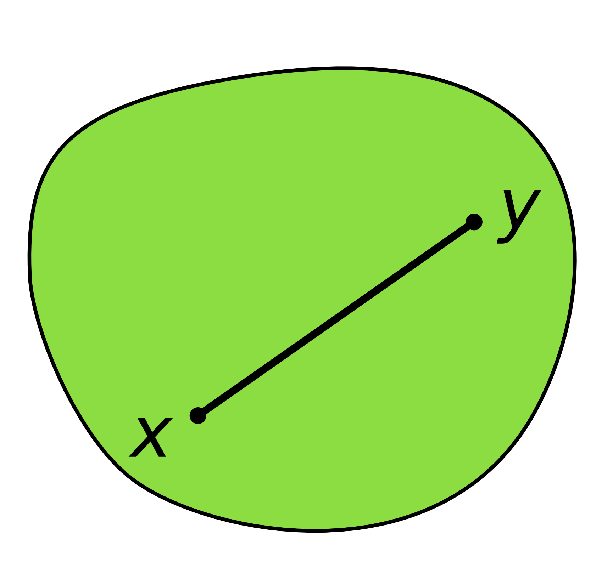
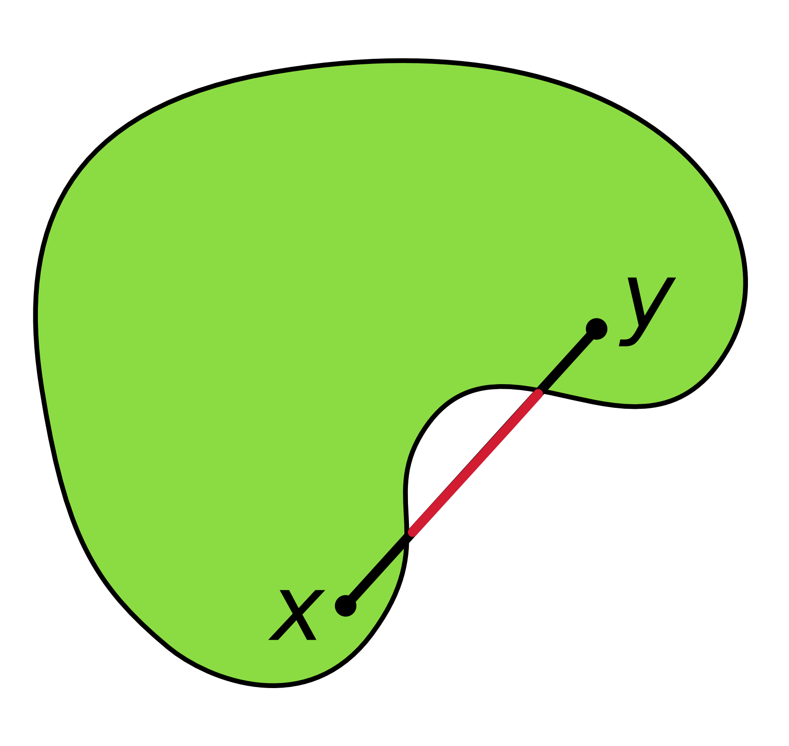
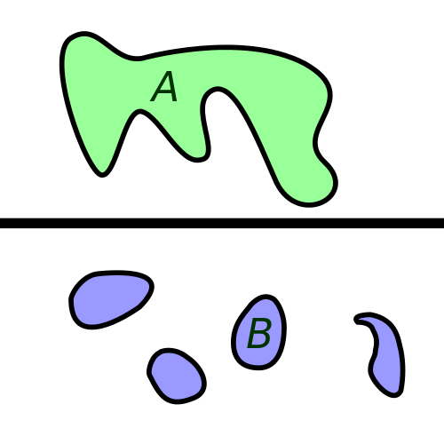

Analyse III
Table of Contents
- 1. Chapitre 1
- 2. Chapitre 2
- 3. Chapitre 3
- 4. Chapitre 4
- 5. Chapitre 5
- 6. Chapitre 6
- 7. Chapitre 7
- 8. Chapitre 14
- 8.1. Définition
- 8.2. Exemple :
- 8.3. Exemple 1
- 8.4. Exemple 2
- 8.5. Exemple 3
- 8.6. Exemple
- 8.7. Definition
- 8.8. Théorème
- 8.9. Théorème de Dirichlet
- 8.10. Exemple 14.11
- 8.11. Propositon
- 8.12. Théorème
- 8.13. Corrolaire
- 8.14. Théorème
- 8.15. Notation complexes
- 8.16. Lemma
- 8.17. Exemple
- 8.18. Lemma
- 8.19. Thèorème
- 8.20. Théorème : Identité de Paserval
- 8.21. Propriété
- 8.22. Théorème
- 8.23. Ex. 11
- 9. Chapitre 18
1 Chapitre 1
Opérateurs différentiels de la physique
1.1 Def: Gradient (\(\nabla\))
Gradient : \(\mathbb{R}^n \rightarrow \mathbb{R}^n\)
\(\text{grad} f(x) = \nabla f(x) = \left(\frac{\delta f}{\delta x_1} (x),...,\frac{\delta f}{\delta x_n} (x)\right) \in \mathbb{R^n}\)
1.2 Def: Laplacien (\(\Delta\))
Laplacien : \(\mathbb{R}^n \rightarrow \mathbb{R}\)
\(\Delta f(x) = \sum\limits_{i=1}^n \frac{\delta^2 f}{\delta x_i^2} (x) \in \mathbb{R}^2\)
1.3 Def: Champ vectoriel (\(F\))
Champ vectoriel : \(\mathbb{R}^n \rightarrow \mathbb{R}^n\)
\(F(x) = \left(F_1(x),...,F_n(x)\right)\)
\(F_i: \mathbb{R}^n \rightarrow \mathbb{R}\)
1.4 Def: Divergence (\(div\) ou \(\nabla\).)
Divergence : \(\mathbb{R}^n \rightarrow \mathbb{R}\)
\(\text{div} F = \nabla . F = \sum\limits_{i=1}^n \frac{\delta F_i}{\delta x_i}\)
1.5 Def: Rotationnel (\(rot\) ou \(\Delta \times\))
Rotationnel : \(\mathbb{R}^n \rightarrow \mathbb{R}^{\frac{n(n-1)}{2}}\)
1.5.1 Pour n=2
\(F: \mathbb{R}^2 \rightarrow \mathbb{R}^2\), \(F=(F_1,F_2)\)
\(\text{rot} F = \Delta \times F = \frac{\delta F_2}{\delta x_1} - \frac{\delta F_1}{\delta x_2} \in \mathbb{R}\)
\(\left(= \begin{vmatrix} \frac{\delta}{\delta x_1} & \frac{\delta}{\delta x_2}\\ F_1 & F_2 \end{vmatrix}\right)\)
1.5.2 Pour n=3
\(F: \mathbb{R}^3 \rightarrow \mathbb{R}^3\), \(F=(F_1,F_2,F_3)\)
\(\text{rot} F = \Delta \times F = \left( \frac{\delta F_3}{\delta x_2} - \frac{\delta F_2}{\delta x_3},\frac{\delta F_1}{\delta x_3} - \frac{\delta F_3}{\delta x_1}, \frac{\delta F_2}{\delta x_1} - \frac{\delta F_1}{\delta x_2} \right) \in \mathbb{R}^3\)
\(\left(= \begin{vmatrix} \frac{\delta}{\delta x_1} & \frac{\delta}{\delta x_2}& \frac{\delta}{\delta x_3}\\ F_1 & F_2 & F_3 \end{vmatrix}\right)\)
1.6 Propriétés
- \(\Delta f = \text{div}(\text{grad} f) = \nabla . (\nabla f)\)
- \(f : \mathbb{R}^n \rightarrow \mathbb{R}\) et \(F: \mathbb{R}^3 \rightarrow \mathbb{R}^3\) \(n=3\) \(\text{rot}(\nabla f) =0 \in \mathbb{R}^3\), \(\text{div(rot} F) = 0\) pour \(n=2\) \(\text{rot}(\nabla) = 0 \in \mathbb{R}\)
- \(\text{div}(f\nabla g) = f \Delta g + \nabla f \nabla g\)
- \(\nabla(fg) = g \nabla f + f \nabla g\)
- \(\text{div}(fF) = f \text{div} F + \nabla f F\)
- \(\text{rot rot} F = - \Delta F + \nabla \text{div} F\)
2 Chapitre 2
Intégrales curvilignes
2.1 Def: Courbe simple
\(\Gamma \subset \mathbb{R}^d\) est une courbe simple si \(\exists I \subset \mathbb{R}\) (intervalle) et \(\gamma: I \rightarrow \mathbb{R}^d\) : continue. tel que
- \(\gamma (I) = \tau\) (courbe)
- \(\gamma (t_1) \neq \gamma(t_2)\) \(\forall t_1,t_2 \in I\) (simple)
\(\gamma\) : une paramétrisation.
2.1.1 Ex. 1 : Cercle
\(\Gamma = \{ x \in \mathbb{R}^2 : |x|=1\}\) dessin cercle \(\gamma: \left[0,2\pi\right] \rightarrow \mathbb{R}^2\) \(\gamma(\theta) = (\cos \theta, \sin \theta)\)

2.1.2 Ex. 2 : Helix
\(\gamma \mathbb{R} \rightarrow \mathbb{R}^3\) \(\gamma(t) = (\cos t, \sin t,t)\)

2.1.3 Ex. 3 : Puissances
\(\mathbb{R} \rightarrow \mathbb{R}^2\) \(\gamma(t) = (t^3,t^2)\)

2.1.4 Ex. 4: Valeur absolue
\(\gamma : \mathbb{R} \rightarrow \mathbb{R}^2\) \(\gamma(t) = (t,|t|)\) dessin

2.1.5 Ex. 5 : Courbe "complexe"
\(\mathbb{R}^2\) courbe pas simple

2.2 Def 2 : Courbe simple fermée
2.3 Def 3: Courbe régulière
\(\Gamma\) : courbe est régulière si \(\exists \left[a,b\right], \gamma: \gamma \cdot \left[a,b\right] \rightarrow \mathbb{R}^d\) tel que
- \(\gamma \in C^1 \left(\left[a,b\right]: \mathbb{R}^2\right)\)
- \(\gamma ' (t) \neq 0 \in \mathbb{R}^d\) \(\left( \left(\gamma_1'(t),...,\gamma_d'(t) \right) \neq (0,...,0) \right)\)
- Ex.1 : régulière \(\gamma'(t) = (-\sin t, cos t) \neq (0,0)\)
- Ex.2 : régulière \(\gamma'(y) = (-\sin t, cos t, 1) \neq (0,0,0)\)
- Ex.3 : \(\gamma' (t) = (3t^2,2t)\) et \(\gamma'(0) = (0,0)\) : \(\Gamma\) : n'est pas régulière.
- Ex.4 : \(\gamma\) n'est pas diff. en \(t=0\). Donc \(\Gamma\) n'est pas régulière.
2.3.1 Remarque :
- \(\Gamma\) : régulière. La ligne tangente en \(\gamma(t_0)\):
(L) : \(\gamma(t_0) + \gamma'(t_0)(t-t_0)\)
- \(\Gamma\) : courbe \(\subset \mathbb{R}^d\)
\(f: \Gamma \rightarrow \mathbb{R}\): continue.
2.4 Def : \(\int\limits_{\Gamma} f\)
\(\int\limits_{\Gamma} f := \int\limits_{a}^{b} f(\gamma(t)) ||\gamma'(t)|| dt\)
\(\gamma : \left[a,b\right] \rightarrow \mathbb{R}^d\): une paramétrisation de \(\Gamma\).
La longueur de \(\Gamma\) : \(\int\limits_{\Gamma} 1 = \int\limits_{a}^{b}||\gamma'(t)|| dt\)
2.4.1 Retour à ex. 1. :
\(\int\limits_{\Gamma}f\) avec \(f=1\)
\(= \int\limits_{0}^{2\pi} ||\gamma'(t)|| dt = \int\limits_{0}^{2\pi} 1 dt = 2\pi\)
2.4.2 Ex. :
2.4.3 Somme intégrale
\(\Gamma_i = \gamma \left( \left[ t_i, t_{i+1} \right] \right)\): \(\gamma\) une paramétrisation \(\left[a,b\right] \rightarrow \mathbb{R}^d\)
Donc \(\int\limits_{\Gamma}f \simeq \sum\limits ||\gamma(t_i)'|| (t_{i+1} - t_i) f(\gamma(t_i)) \simeq \int\limits_{a}^{b} ||\gamma'(t)|| f(\gamma(t)) dt\)
\((t_1) \neq \gamma(t_2)\) \(\forall t_1,t_2 \in I\) (simple) \(\gamma\) : une paramétrisation.
2.5 Def : L'intégrale curviligne pour un champ vectoriel.
\(F : \Gamma \rightarrow \mathbb{R}^d\) \(\Gamma\) : courbe \(\gamma\) : paramétrisation sur \(\left[a,b\right]\) \(\int\limits_{\Gamma} F \vec{dl} := \int\limits_{a}^{b} F(\gamma(t))\cdot\gamma'(t) dt\) (\(\cdot\) =produit scalaire…)
- Ex : \(\int\limits_{\Gamma} F \vec{dl}\)
\(\Gamma = \left\lbrace (x,y) \in \mathbb{R}^2: y = \cosh x, x \in \left[0,1\right] \right\rbrace\)
\(F(x,y) = (x^2,0)\ \ \gamma: \left[0,1\right] \rightarrow \mathbb{R}^2\)
\(\gamma(t) = (t,\cosh t)\) \(\int\limits_{\Gamma} F \vec{dl}\)
\begin{align*} \Gamma &= \int\limits_{0}^{1} F(\gamma(t)) \cdot \gamma'(t) dt = \int\limits_{0}^{1} (t^2,0)\cdot(1,\sinh t) dt\\ &= \int\limits_{0}^{1} t^2 dt = \frac{1}{3} \end{align*}2.6 Def : courbe régulière par morceau.
\(\exists \gamma \left[a,b\right] \rightarrow \mathbb{R}^d\) \(t_0=a,...,t_k=b\) tel que : \(\gamma \in C^1 \left(\left[t_i,t_{i+1}\right]\right)\) \(\gamma'(t) \neq 0\ \forall t \neq t_i\)
2.7 Def : \(\Gamma\) régulière par morceau:
\(f : \Gamma \rightarrow \mathbb{R}\): continue.
\begin{align*} \int\limits_{\Gamma} f := \sum\limits_{i=0}^{k-1} f(\gamma(t)) || \gamma'(t)|| dt \end{align*}\(F: \Gamma \rightarrow \mathbb{R}^d\) : champ vectoriel:
\begin{align*} \int\limits_{\Gamma}F \vec{dl} := \sum\limits_{i=0}^{k-1} \int\limits_{t_i}^{t_{i+1}} F(\gamma(t)) || \gamma'(t)|| dt \end{align*}2.7.1 Ex. : Périmètre d'un carré
 \(\Gamma = \Gamma_1 \cup \Gamma_2 \cup \Gamma_3 \cup \Gamma_4\)
\begin{align*} \Gamma_1 &= \left\lbrace (t,0): t\in \left[0,1\right] \right\rbrace\\ \Gamma_2 &= \left\lbrace (1,t-1): t\in \left[1,2\right] \right\rbrace\\ \Gamma_3 &= \left\lbrace (3-t,1): t\in \left[2,3\right] \right\rbrace\\ \Gamma_4 &= \left\lbrace (0,4-t): t\in \left[3,4\right] \right\rbrace\\ \end{align*}\(\gamma: \left[0,4\right] \rightarrow \mathbb{R}^2\)
\begin{align*} \gamma(t) = &\gamma_1(t) &\left[0,1\right]\\ & \gamma_2(t) &\left[1,2\right]\\ & \gamma_3(t) &\left[2,3\right]\\ & \gamma_4(t) &\left[3,4\right] \end{align*}\(f=1\)
\begin{align*} |\Gamma| = \int\limits_{\Gamma} f &= \int\limits_{0}^{1} || \gamma'(t)|| dt + \int\limits_{1}^{2} || \gamma'(t)|| dt\\ &+ \int\limits_{2}^{3} || \gamma'(t)|| dt + \int\limits_{3}^{4} || \gamma'(t)|| dt\\ \end{align*} \begin{align*} (||\gamma'(t)||=1) = \int\limits_{0}^{1} 1 + \int\limits_{1}^{2} 1 + \int\limits_{2}^{3} 1 + \int\limits_{3}^{4} = 4 \end{align*} \begin{align*} \int\limits_{\Gamma}f= \sum\limits_{i=1}^4 \int\limits_{\Gamma_i}\\ \Gamma_2 : \left\lbrace (1,t) t \in \left[0,1\right] \right\rbrace \end{align*}3 Chapitre 3
Champs qui dérivent d'un potentiel
3.1 Def:
\(\Omega\) ouvert \(\mathbb{R}^n\)
\(F: \Omega \rightarrow \mathbb{R}^n\)
\(F(x) = (F_1(x),...,F_n(x))\)
On dit que \(F\) dérive d'un potentiel sur \(\Omega\). Si \(\exists f: \Omega \rightarrow \mathbb{R}\)
\(f\in C^1(\Omega): \nabla f = F ds \Omega\)
3.1.1 Exemple
\(F(x) = x\)
\(f(x) = \frac{1}{2} ||x||^2 = \frac{1}{2} \sum\limits_{i=1}^n x_i^2\)
\(\nabla f = F\)
\(F\): dérive d'un potentiel.
3.2 Théorème
\(F\) dérive d'un potentiel,
\(F \in C^1(\Omega)\) Alors
\(\frac{\delta F_i}{\delta x_j}(x) = \frac{\delta F_j}{\delta x_i}(x) \forall i,j \in \lbrace 1,...,n\rbrace,\ \forall x \in \Omega\)
3.2.1 Preuve
\(F\) dérive d'un potentiel de \(f\)
\(f\) ∈ C1(Ω)$
\(\nabla f(x)= F(x) \forall x \in \Omega\)
Car \(F\in C^1(\Omega)\) on a
\(f \in C^2(\Omega)\)
Donc \(\frac{\delta^2 f}{\delta x_i \delta x_j}(x) = \frac{\delta^2 f}{\delta x_j \delta x_i}(x)\) \(\forall i,j \in \lbrace 1,...,n\rbrace,\ \forall x \in \Omega\) (1)
On a
\(F_i(x) = \frac{\delta f}{\delta x_i}(x)\) \(\forall x \in \Omega,\ \forall i\)
\(\frac{\delta^2 f}{\delta x_j}(x) = \frac{\delta^2 f}{\delta x_j \delta x_i}(x)\) \(\forall x \in \Omega,\ \forall i,j\) (2)
\(\frac{\delta^2 f}{\delta x_i}(x) = \frac{\delta^2 f}{\delta x_i \delta x_j}(x)\) \(\forall x \in \Omega,\ \forall i,j\) (3)
(1) (2) (3) \(\Rightarrow \frac{\delta F_i}{\delta x_j}(x) = \frac{\delta F_j}{\delta x_i}(x)\)
3.3 Question:
F: régulier, suppossons \(\frac{\delta F_i}{\delta x_j}=\frac{\delta F_j}{\delta x_i}\) \(\forall x \in \Omega,\ \forall i,j\)
Est-ce que \(F\) dérive d'un potentiel ?
3.3.1 Réponse
Vrai si \(\Omega\) convexe ou simplement connexe.
"pas vrai": si \(\Omega\) n'est pas simplement connexe.
3.4 Théorème
\(\Omega\): ouvert connexe
\(F: \Omega \rightarrow \mathbb{R}^n: F\in C(\Omega,\mathbb{R}^n)\)
Les affirmations suivantes sont équivalentes :
- \(F\) dérive d'un potentiel
- \(\int\limits_\Gamma F dl = 0\) \(\forall F\): fermée, régulière, par morceaux, dans \(\Omega\)
3.4.1 Preuve
(1) \(\Rightarrow\) (2)
\(F\): dérive d'un potentiel
\(\exists f \in C^1(\Omega)\): \(\nabla f(x) = F(x)\) \(\forall x \in \Omega\)
\(\Gamma\): courbe fermée régulière.
\(\gamma: [a,b]:\) \(\Gamma = \gamma([a,b])\) et \(\gamma(a)=\gamma(b)\)
On calcule
\begin{align*} \int\limits_{\Gamma} F \vec{dl} &= \int\limits_a^b F(\gamma (t)) \gamma'(t) dt\\ &= \int\limits_a^b \nabla f(\gamma(t)) \gamma'(t) dt \\ &= \int\limits_a^b \frac{d}{dt} \left[ f(\gamma(t)) \right] dt\\ &= f(\gamma(b)) - f(\gamma(a)) = 0 \end{align*}(2) \(\Rightarrow\) (1)
On sait :
\(\int\limits_{\Gamma} F \vec{dl} = 0\) \(\forall \Gamma\) fermée régulière.
\(\Omega\) convexe.
On montre \(\bar{f}\) dérive d'un potentiel
On va essayer de trouver \(f\) tel que
\(\nabla f = F\)

On fixe : \(x_0 \in \Omega\).
Pour \(x \in \Omega\), \([x_0,x] = x_0 + t(x-x_0\) \(t \in [0,1]\)
Définition : \(f(x) = \int\limits_{[x_0,x]} F \vec{dl}\)
\(\Omega\) convexe \(\Rightarrow [x_0,x] \subset \Omega\) \(\forall x \in \Omega\)
On montre:
\(\nabla f(x) = F(x)\) \(\forall x \in \Omega\)
Rappel
\(f(y) - f(x) = \nabla f(x)(y-x)+o(||y-z||)\)
\(f(y) - f(x) = \int\limits_{[x_0,y]} F dl - \int\limits_{[x_0,x]} F dl\)
On a
\(\int\limits_{[x_0,x]} F dl + \int\limits_{[x,y]} F dl + \int\limits_{[y,x_0]} F dl = 0\)
Donc :
\begin{align*} f(y) -f(x) &= \int\limits_{[x_0,y]} + \int\limits_{[x,y]} + \int\limits_{[y,x_0]}\\ &= \int\limits_{[x,y]} F \vec{dl} \end{align*}\([x,y] = \lbrace x+ t(y-x): t\in [0,1] \rbrace\)
\begin{align*} &= \int\limits_0^1 F(\gamma(t)) \gamma'(t) dt\\ &= \int\limits_0^1 F(\gamma(t)) (y-x) dt\\ &\sim \int\limits_0^1 F(x) (y-x) dt = F(x) (y-x) \end{align*}3.5 Def: Convexe
\(\Omega\) convexe si et seulement si \(\forall x,y \in \Omega\)
\([x,y] \subset \Omega\)
Convexe :

Non-convexe :

3.6 Def: Connexe
\(\Omega\) simplement connexe si et seulement si
A connexe, B non-connexe

3.7 Exemple
\(F(x,y) = (4 x^3 y^2, 2x^4y + y)\)
Montrer que \(F\) dérive d'un potentiel dans \(\mathbb{R}^2\)
Solution: On cherche \(f: \nabla f = F \in \mathbb{R}^2\)
\(\frac{\delta f}{\delta x} = 4x^3y^2 \Rightarrow f(x,y)=x^4y^2 + g(y)\)
\(\frac{\delta f}{\delta y} = 2x^4y+y\)
\(\frac{\delta f}{\delta y} = 2 x^4 y + g'(y) = 2x^4 y + y\)
Donc \(g'(y) = y\)
\(g(y) = \frac{1}{2} y^2 + C\)
Alors \(f(x,y) = x^4y^2 + \frac{1}{2}y^2 + C\)
Autre possiblité :
\(f(x,y) = \int\limits{[0,(x,y)]} F dl\)
\(\lbrace \gamma(t) = (tx,ty)\ t \in [0,1] \rbrace\)
\begin{align*} f(x,y) &=\\ &= \int\limits_0^1 F(tx,ty) (x,y) dt\\ &= \int\limits_0^1 (4t^3x^3t^2y^2,2t^4x^4ty+ty) (x,y) dt\\ &= \int\limits_0^1(4t^5x^4y^2+2t^5x^4y^2+ty^2) dt\\ &= \int\limits_0^1(6t^5x^4y^2+ty^2) dt\\ &= x^4y^2 + \frac{1}{2}y^2 \end{align*}3.8 Exemple
\(F=(2x\sin z, z e^y, x^2 \cos \ + e^y\)
Potentiel de \(F\) ?
Solution On cherche \(f : \nabla f = F\)
\(\frac{\delta f}{\delta x} = 2 x \sin z \Rightarrow f(x,y,z) = x^2 \sin \ + f_1(y,z)\)
\(\frac{\delta f}{\delta x} = z e^y = \frac{\delta f_1}{\delta y} (y,z) \Rightarrow f_1(y,z) = z e^y + f_2(z)\)
\(\frac{\delta f}{\delta z} = x^2 \cos z + e^y = e^y + f_2'(z) + x^2 \cos z\)
\(f_2'(z) = 0 \Rightarrow f_2(z) = C\)
\(f(x,y,z) = x^2 \sin z + z e^y + C\)
3.9 Exemple
\(F=\left( \frac{-y}{x^2+y^2},\frac{x}{x^2+y^2}\right)\)
F est définit sur $\mathbb{R}2 \backslash \lbrace (0,0) \rbrace$$
Montrer :
\(\frac{\delta F_1}{\delta y} = \frac{\delta F_2}{\delta x}\)
Montrer : F ne dérive pas d'un potentiel
\(\frac{\delta F_1}{\delta y} = \frac{-1(x^2+y^2)+y 2y}{(x^2+y^2)^2} = \frac{y^2-x^2}{(x^2+y^2)^2}\)
\(\frac{\delta F_2}{\delta x} = \frac{1(x^2+y^2)-2x^2}{(x^2+y^2)^2} = \frac{y^2-x^2}{(x^2+y^2)^2}\)
\(\Gamma\) L le cercle unité.
\(\gamma (t) = (\cos t, \sin t)\) \(t \in [0,2\pi]\)
\begin{align*} \int\limits_{\Gamma} F dl &= \int\limits_0^{2\pi} (-\sin t, \cos t) (-\sin t, \cos t) dt\\ &= \int\limits_0^{2\pi} 1 dt = 2 \pi \end{align*}4 Chapitre 4
Théorème de Green
4.1 Définition domaine régulièr :
\(\Omega \subset \mathbb{R}^2\) est un domaine régulier, s'il existe \(\Omega_0,...,\Omega_m\) (\(m \ge 0\)) des ouverts bornés tels que :
\(\Omega = \Omega_0 \backslash \lbrace \underset{i=1}{\overset{m}{U}} \Omega_i \rbrace\)
\(\bar{\Omega_i} \subset \Omega_0\) \(1 \le i \le m\)
\(\Omega_i \cap \Omega_j = \varnothing\) \(i \neq j\), \(i \le i,j \le m\)
\(\delta \Omega_i = \Gamma_i\) : fermées, simples régulières
image ensemble green
On dit que \(\delta \Omega = \Gamma_0 \cup ... \cup \Gamma_m\) est orientée positivement si le sens de parcours de \(\Gamma_i\) (\(0\le i \le m\)) laisse \(\Omega\) à gauche.
\(\gamma_i\) une paramétrisation de \(\Gamma_i\) (\(0\le i \le m\)
Le vecteur tangent : \((\gamma_{i,1}, \gamma_{i,2}) . (\gamma{i,1}'(t), \gamma{i,2}'(t)\)
Vecteur normal :\(\nu = \left(\gamma_{i,2}'(t), - \gamma_{i,1}' (t)\right)\)
Le sens positif si \(\nu\) : dirigé vers l'extérieur
4.2 Ex. Le disque unité (ouvert)
\(\Omega = \lbrace (x_1,x_2) \in \mathbb{R}^2: x_1^2+x_2^2 < 1 \rbrace\) un domaine régulier dans \(\mathbb{R}^2\)
Image cercle
Vérification : \(\Omega_0 = \Omega\), \(m=0\)
\(\Gamma_0 = \delta \Omega_0 = \lbrace (\cos \theta, \sin \theta) 0 \le \theta \le 2 \pi \rbrace\)
\(\gamma (\theta) = (\cos \theta, \sin \theta)\)
\(\gamma' (\theta) = (- \sin \theta, \cos \theta) \neq (0,0)\)
\(\Omega\): a un sens positif
\(\nu = (\cos \theta, \sin \theta)\) \((= (\cos \theta, - - \sin \theta)\)
4.3 Théorème de Green
\(\Omega \subset \mathbb{R}^2\) domaine régulier
\(\delta \Omega\) a un sens positif.
\(F \in C'(\bar{\Omega}: \mathbb{R}^2)\)
Alors \(\underset{\Omega}{\int\int} rot F = \int\limits_{\delta\Omega} \vec{F} \cdot d\vec{l}\)
Rappel :
\(\int\limits_{\Gamma} \vec{F} d\vec{l} = \int\limits_a^b F(\gamma(t)) \gamma'(t) dt\)
\(rot F = \frac{\delta F_2}{\delta x_1} - \frac{\delta F_1}{\delta x_2}\)
4.4 Exemple Green
\(\Omega = \lbrace (x,y) \in \mathbb{R}^2 x^2+y^2 < 1\rbrace\)
\(F(x,y) = (y^2,x)\)
Vérifier le théorème de Green
Vérification :
\(rot F = \frac{\delta F_2}{\delta x} - \frac{\delta F_1}{\delta y} = 1 -2y\)
\begin{align*} \underset{\Omega}{\int\int} rot F &= \int\limits_0^1 \int\limits_0^{2\pi} (1- 2 r\sin \theta) r d \theta d r\\ &= \int\limits_0^1 \left( 2 \pi + 2 r\cos \theta |^{2\pi}_0\right) r dr\\ &= \int\limits_0^1 2\pi r dr = \pi \end{align*} \begin{align*} \int\limits_{d \Omega} \vec{F} d\vec{l} &= \int\limits_0^{2\pi} F (\gamma \theta) \cdot \gamma' \theta d \theta \\ &= \int\limits_0^{2\pi} (\sin^2 \theta, \cos \theta) \cdot (-\sin \theta, \cos \theta) d \theta \\ &= \int\limits_0^{2\pi} \sin^3 \theta d \theta + \int\limits_0^{2\pi} \frac{1 + \cos 2 \theta}{2} d \theta = 0 + \pi = \pi \end{align*} \begin{align*} \int\limits_{0}^{2\pi} \sin^3 \theta d \theta &\overset{s=\theta -\pi}{=} \int\limits_{-\pi}^{\pi} \sin^3(s+\pi) d s \\ &= \int\limits_0^{\pi} \sin^3 \theta d \theta + \int\limits_0^{\pi} \sin^3(s+\pi) d s\\ &= \int\limits_0^{\pi} \sin^3 \theta d \theta - \int\limits_0^{\pi} \sin^3 s d s \\ &= 0 \end{align*}4.5 Théorème de la divergence
\(\Omega\) domaine régulier \(\mathbb{R}^2\)
\(\delta \Omega\) sens positif
\(F \in C'(\bar{\Omega}: \mathbb{R^2}\)
Alors
\(\underset{\Omega}{\int\int} div F = \int\limits_{\delta \Omega} F \cdot \nu dl\) : vecteur normal unitaire vers l'extérieur
Rappel :
\(\int\limits_{\Gamma} f dl = \int\limits_a^b f(\gamma(t)) ||\gamma'(t)|| dt\)
\(div F = \frac{\delta F_1}{\delta x_1} + \frac{\delta F_2}{\delta x_2}\)
4.6 Propositon :
\(\Omega\) domaine régulier \(\mathbb{R}^2\)
\(\delta \Omega\) sens positif
\(u \in C'(\bar{\Omega}: \mathbb{R^2}\)
\(\underset{\Omega}{\int\int} \frac{\delta u }{\delta x_i} = \int\limits_{\delta \Omega} u \cdot \nu_i dl\)
\(i=1,2\)
4.6.1 Preuve :
On va montrer que Théorème de Green \(\Leftrightarrow\) théorème de la divergence \(\Leftrightarrow\) Propositon
4.6.1.1 Vérification:
Théorème de Green \(\Rightarrow\) Propositon
On veut vérifier :
\(\underset{\Omega}{\int\int} \frac{\delta u }{\delta x_i} = \int\limits_{\delta \Omega} u \cdot \nu_1 dl\)
F = (0, u) par le théorème de Green :
\begin{align*} \underset{\Omega}{\int\int} rot F &= \int\limits{\delta\Omega} \vec{F} d\vec{l}\\ \underset{\Omega}{\int\int} \frac{\delta u}{\delta x_1} &= \int\limits_a^b \vec{F}(\gamma (t)) \gamma'(t) dt \ (m=0)\\ &= \int\limits_a^b u(\gamma(t)) \gamma_2'(t) dt \ (1) \end{align*}On a :
\begin{align*} \int\limits_{\delta\Omega} u \nu_1 d\vec{l} = \int_a^b u(\gamma(t)) \gamma_2'(t) dt\ (2)\\ \left( \nu (\gamma(t)) = \left(\gamma_2'(t), - \gamma_1'(t)\right)\right) \end{align*}\((1) + (2) \Rightarrow \underset{\Omega}{\int\int} \frac{\delta u }{\delta x_i} = \int\limits_{\delta \Omega} u \cdot \nu_1 dl\)
4.6.1.2 Vérification :
Propositon \(\Rightarrow\) Théorème de Green
\begin{align*} \underset{\Omega}{\int\int} rot F &= \underset{\Omega}{\int\int} \left(\frac{\delta F_2}{\delta x_1}-\frac{\delta F_1}{\delta x_2}\right)\\ &= \int\limits_{\delta \Omega} F_2 \nu_1 dl - \int\limits_{\delta\Omega} F_1 \nu_2 dl\\ &= \int\limits_{\delta\Omega} (F_1,F_2)(-\nu_2, \nu_1) dl\\ &= \int\limits_{\delta\Omega} F \vec{dl} \end{align*}4.6.1.3 Vérification :
Propositon \(\Rightarrow\) théorème de Green
\begin{align*} \underset{\Omega}{\int\int} div F &= \underset{\Omega}{\int\int} \left( \frac{\delta F_1}{\delta x_1}+ \frac{\delta F_2}{\delta x_2}\right)\\ &= \int\limits_{\delta \Omega} (F_1 \nu_1 + F_2 \nu_2) dl\\ &= \int\limits_{\delta \Omega} F \nu dl \end{align*}4.6.1.4 Vérification :
Théorème de la divergence
\begin{align*} \underset{\Omega}{\int\int}\frac{\delta u}{\delta x_1} &= \underset{\Omega}{\int\int} \left(\frac{\delta u}{\delta x_1}+ \frac{\delta 0}{\delta x_2} \right) F=(u,0)\\ &= \underset{\Omega}{\int\int} div F = \int\limits_{\delta \Omega} F \nu dl\\ &= \int\limits_{\delta \Omega} u \nu_1 dl \end{align*}4.7 Preuve du théorème de Green
4.7.1 Étape 1 :
image domaine
\(\Omega = \lbrace (x_1,x_2) : a \le x_1 \le b, f(x_1) \le x_2 \le g(x_1) \rbrace\)
\(\underset{\Omega}{\int\int} \frac{\delta u}{\delta x_2} = \int\limits_{\delta\Omega} u \nu_2 dl\)
\begin{align*} \underset{\Omega}{\int\int} \frac{\delta u}{\delta x_2} &= \int\limits_a^b \left(\int\limits_{f(x_1}^{g(x_1} \frac{\delta u}{\delta x_2} (x_1,x_2) dx_2\right)dx_1 \\ &= \int\limits_a^b \left[u(x_1,g(x_1)) - u(x_1,f(x_1))\right]dx_1 \\ &= \int\limits_a^b u(x_1,g(x_1)) - \int\limits_a^b u (x_1,f(x_1)) dx_1 \end{align*}\(\int\limits_{\delta\Omega} u \nu_2 = \left(\int\limits_{\Gamma_1} + \int\limits_{\Gamma_2} + \int\limits_{\Gamma_3} + \int\limits_{\Gamma_4}\right) u \nu_2\)
Notons que : \(\nu_2 = 0\) sur \(\Gamma_1 \cup \Gamma_3\)
Donc \(\int\limits_{\delta\Omega} u \nu_2 = \left(\int\limits_{\Gamma_2}+ \int\limits_{\Gamma_4}\right) u \nu_2\)
\(\int\limits_{\Gamma_2} u \nu_2 = - \int\limits_a^b u(x_1,f(x_1))dx_1\)
\(\gamma(x_1) = (x_1,f(x_1))\) : \(a \le x_1 \le b\)
\(\gamma'(x_1) = (1,f'(x_1))\) : \(\nu(\gamma(x_1)) = (f'(x_1),-1)\)
\(\int\limits_{\Gamma_4} u \nu_2 = - \int\limits_a^b u(x_1,g(x_1))dx_1\)
\(\gamma(x_1) = (x_1,g(x_1))\) (neg)
4.7.2 Étape 2 :
\(\Omega = \lbrace (x_1,x_2) : x\le x_2 \le d, f(x_2) \le x_1 \le g(x_2) \rbrace\)
image domaine 2
\(\underset{\Omega}{\int\int} \frac{\delta u}{\delta x_1} = \int\limits_{\delta\Omega} u \nu_1 dl\)
4.7.3 Étape 3:
image domaine 3
\(\underset{\Omega}{\int\int} \frac{\delta u}{\delta x_1} = \int\limits_{\delta\Omega} u \nu_1 dl\)
\(\underset{\Omega}{\int\int} \frac{\delta u}{\delta x_2} = \int\limits_{\delta\Omega} u \nu_2 dl\)
4.7.4 Étape 4 :
image domaine 4
4.7.5 Étape 5
image domaine 5
4.8 Corrolaire chapitre 3-4
\(\Omega\) : convexe (\(\Omega\) n'a pas de trou)
Si \(rot F = 0\) alors \(F\) dérive d'un potentiel
5 Chapitre 5
Intégrales de surfaces
5.1 Déf.
\(\Sigma \subset \mathbb{R}^3\) est une surface régulière. S'il existe
- \(A \subset \mathbb{R}^2\), ouvert borné, tel que \(\delta A\) (\(\delta\) = bord d'un ensemble) une courbe simple fermée régulière
- \(\sigma\): \(\bar{A} \rightarrow \Sigma = \sigma (\bar{A})\): injective et \(\sigma_u \times \sigma_{v} \neq 0\) $σ(u,v) = (σ1(u,v), σ2(u,v), σ3(u,v))
Notations :
\(\frac{\sigma_u \wedge \sigma_v}{||\sigma_u \wedge \sigma_v ||}\) : normal unité
\(\sigma(\delta A) = \sigma \Sigma\) : la frontière de \(\Sigma\)
5.1.1 Exemple : sphère
\(\Sigma \lbrace (x,y,z) \in \mathbb{R}^3, x^2+y^2+z^2=1 \rbrace\)
\((x,y,z) = (\sin \varphi \cos \theta, \sin \varphi \sin \theta, \cos \varphi)\)
\(\sigma\): \((0,2\pi) \times (0,\pi) \rightarrow \Sigma\) \((\theta,\varphi) \rightarrow \sigma(\theta,\varphi)\)
i) \(A = (0,2\pi) \times (0,\pi)\)
image carrée cf. Grégoire
A ouvert
ii) \(\sigma(\bar{A}) = \Sigma\)
On peut vérifier que \(\sigma\) injective sur \(A\)
\(\sigma_{\theta} \wedge \sigma_{\varphi} \neq 0\) \(\forall (\theta,\varphi)\in A\)
\(\sigma_{\theta} = (- \sin \varphi \sin \theta, \sin \varphi \cos \theta, 0)\)
\(\sigma_{\varphi} = (\cos \varphi \cos \theta, \cos \varphi \sin \theta, -\sin(\varphi))\)
Rappel
\(x,y \in \mathbb{R}^3\)
\(x \wedge y = \begin{pmatrix} x_1 & x_2 & x_3 \\ y_1 & y_2 & y_3 \end{pmatrix} = (x_2y_3-x_3y_2,x_3y_1-x_1y_3,x_1y_2-x_2y_1)\)
On va vérifier
\(\sigma_{\theta} \wedge \sigma_{\varphi} \neq (0,0,0) \in \mathbb{R}^3\)
\(( \sigma_{\theta} \wedge \sigma_{\varphi})_3\)
\begin{align*} &= -\sin \varphi \sin \theta \cos \varphi \sin \theta - \sin \varphi \cos \theta \cos \varphi \cos \theta\\ &= - \sin \varphi \cos \varphi \end{align*} \begin{align*} ( \sigma_{\theta} \wedge \sigma_{\varphi})_1 = -sin\varphi \cos \theta \sin \varphi \\ &= - \sin^2 \varphi \cos \theta \end{align*}\(( \sigma_{\theta} \wedge \sigma_{\varphi})_2 = - \sin^2 \varphi \sin \theta\)
\begin{align*} \sigma_{\theta} \wedge \sigma_{\varphi} = &= (- \sin \varphi \cos \theta, -\sin^2 \varphi \sin \theta, -\sin \varphi \cos \varphi) &= - \sin \varphi(\sin \varphi \cos \theta, \sin \varphi \sin \theta, \cos \varphi) \end{align*}\(||\sigma_{\theta} \wedge \sigma_{\varphi}|| = || \sin \varphi|| \neq 0\) ϕ ∈ (0,π)$
5.2 Def.
\(\Sigma\) surface régulière par morceau si (intuitivement) elle est union finie de surfaces régulière "disjointes".
5.2.1 Ex.
\(\Sigma = \lbrace (x,y,z) : x^2+y^2 = 1, 0 \le z \le h \rbrace\)
image cylindre
\(\sigma: [0,2\pi] \times [0,h] \rightarrow \mathbb{R}^2\)
\((\theta,z) \rightarrow (\cos \theta, \sin \theta, z)\)
\(\sigma(\bar{A}) = \Sigma\)
\(\sigma\) : injective \(A\)
\(\sigma_{\theta} \wedge \sigma_z \neq (0,0,0) \in \mathbb{R}^3\)
\(\sigma_{\theta} =(-\sin\theta, \cos \theta, 0)\)
\(\sigma_{z} =(0,0,1)\)
\(\sigma_{\theta} \wedge \sigma_z = (\cos \theta, \sin \theta, 0)\)
\(|| \sigma_{\theta} \wedge \sigma_z || = 1 \neq 0\)
5.3 Def.
\(\Sigma\) une surface régulière, \(f: \Sigma \rightarrow \mathbb{R}\) continue.
On définit :
\(\underset{\Sigma}{\int\int} f ds := \int\limits_A f(u,v) |\sigma_u \wedge \sigma_v| du dv\)
(\(\sigma: A \rightarrow \Sigma\): une paramétrisation )
Si \(\Sigma\) régulière par morceau (\(\Sigma = \cup \Sigma_i\), \(\Sigma_i\) "disjointes")
\(\underset{\Sigma}{\int\int} f ds := \Sigma_i \int\limits_{\Sigma} f ds = \Sigma _i \underset{A}{\int\int}f[\sigma_i(u,v)]|\frac{d\sigma_i}{du}\wedge \frac{d\sigma_i}{dv}|dudv\)
5.3.1 Exemple 5.3
\(\Sigma = \lbrace (x,y,z): x^2+y^2+z^2 = R^2 \rbrace\)
Calculer : \(\int\limits_{\Sigma} 1 =\) aire(\(\Sigma\))
\(\sigma: [0,2\pi] \times [0,\pi] \rightarrow \mathbb{R}^3\)
$(θ, ϕ) → R(sin ϕ cos θ, sin ϕ sin θ, cos ϕ $
\(\sigma_{\theta} = \frac{d \sigma}{d\theta} = R I_1\)
\(\sigma_{\varphi} = \frac{d \sigma}{d\varphi} = R I_2\)
\(\sigma_{\theta} \wedge \sigma_{\varphi} = RI_1 \times RI_2 = R^2 I_1 \wedge I_2\)
\(|\sigma_{\theta} \times \sigma_{\varphi}| = R^2 |I_1 \wedge I_2| = R^2 \sin \varphi\)
\begin{align*} \underset{\Sigma}{\int\int}f ds &= \underset{[0,2\pi] \times [0,\pi]}{\int\int} 1 R^2 \sin \varphi d\theta d\varphi\\ &= \int\limits_0^{\pi} 2\pi R^2 \sin \varphi d \varphi\\ &= - 2\pi R^2 \cos \varphi |^{\pi}_0\\ &= 4 \pi R \end{align*}5.3.2 Exemple 5.4
\(\underset{\Sigma}{\int\int}f ds\) \(f(x,y,z) = x^2+y^2+2z\) et
\(\Sigma \lbrace x^2+y^2 = 1, 0 \le z \le 1 \rbrace\)
\begin{align*} \underset{\Sigma}{\int\int}f ds &= \underset{[0,2\pi] \times [0,\pi]}{\int\int} f(\cos \theta, \sin \theta, z) 1 d\theta dz\\ &= \underset{[0,2\pi] \times [0,\pi]}{\int\int} (\cos^2 \theta + \sin^2 \theta + 2z) d \theta dz \\ &= \int\limits_0^1 \left[ \int\limits_0^{2\pi} (1+2z) d\theta \right] dz \\ &= \int\limits_0^1 2 \pi (1 + 2z) dz \\ &= 2\pi 4\pi \frac{z^2}{2}|_0^1\\ &= 2\pi + 2\pi = 4\pi \end{align*}5.4 Def.
\(\Sigma\) regulière par morceau
\(F: \Sigma \rightarrow \mathbb{R}^3\)
On définit :
\(\underset{\Sigma}{\int\int} \vec{F} \vec{ds} = \underset{A}{\int\int} \vec{F}(\sigma(u,v))(\sigma_u\wedge \sigma_v) du dv\)
On a :
\begin{align*} \underset{\Sigma}{\int\int} \vec{F} \vec{ds} &= \underset{\Sigma}{\int\int} (\vec{F} \vec{\nu})[\sigma(u,v)] du dv\\ \text{où $\nu(\sigma(u,v))$}\\ &= \frac{\sigma_u \wedge \sigma_v}{||\sigma_u \wedge \sigma_v||} \end{align*}6 Chapitre 6
Théorème de la divergence
6.1 Def.
\(\Omega \subset \mathbb{R}^3\) ouvert, est une domaine régulier s'il existe \(\Omega_0,...,\Omega_m\) domaines bornés de \(\mathbb{R}^3\) tels que
- \(\Omega = \Omega_0 \backslash \left( U_{i=1}^m \Omega_i \right)\)
- \(\bar{\Omega}_i \subset \Omega_0\) \(1\le i \le m\)
- \(\Omega_i \cap \Omega_j \neq \varnothing\) \(i\neq j\), \(1\le i,j \le m\)
- \(\delta \Omega_i = \Sigma_i\) régulière orientable (par morceau), \(\delta \Sigma_i = \varnothing\), \(i=0,...,m\)
- Il existe un champ de normales extérieures \(\nu\) à \(\Omega\), image patate orientable avec trous
Remarque: Un domaine \(\Omega\) est régulier si \(\forall x_0 \in \delta \Omega\), autour de \(x_0\) on peut considérer \(\Omega\) comme la moitié de l'espace dessin omega, demi espace
6.2 Théorème de la divergence
\(\Omega\) domaine régulier.
\(F: \bar{\Omega} \rightarrow \mathbb{R}^3\) : \(C^1\)
Alors :
\(\underset{\Omega}{\int\int\int} \text{div} F = \underset{\delta\Omega}{\int\int} (F \nu) ds\)
(ici \(\nu\) est le vecteur normal extérieur)
6.3 Ex. 6.4
\(\Omega = \lbrace (x,y,z) \in \mathbb{R}^3: x^2+y^2+z^2 < 1 \rbrace\)
\(F(x,y,z) = (xy,y,z)\)
On veut vérifier le théorème de la divergence
\(div F = y + 1 + 1 = y + 2\)
\((x,y,z) = (r\cos\theta\sin\varphi,r\sin\theta\sin\varphi,r\cos\varphi)\)
\begin{align*} \underset{\Omega}{\int\int\int} (y+2) &= \int\limits_0^{1} \int\limits_0^{2\pi} \int\limits_0^{\pi} (r\sin\theta\sin\varphi + 2) r^2\sin\varphi d\varphi d\theta dr \\ &= \int\limits_0^{1}r^3 dr \int\limits_0^{2\pi} \sin\theta d\theta \int\limits_0^{\pi} \sin^2\varphi d\varphi \\ &+ 2 \int\limits_0^{1}r^2 dr \int\limits_0^{2\pi} 1 d\theta \int\limits_0^{\pi} \sin\varphi d\varphi \\ &= \frac{1}{4} 0 \int\limits_0^{\pi} \sin^2\varphi d\varphi \\ &+ 2 \frac{1}{3} 2\pi (-\cos\varphi)|^{\pi}_0 = \frac{8\pi}{3} \end{align*}\(\sigma(\theta,\varphi)\)
\(\delta \Omega = \Sigma = \lbrace (\cos\theta\sin\varphi,\sin\theta\sin\varphi,\cos\varphi:\ \theta \in [0,2\pi], \varphi \in[0,\pi]\rbrace\)
\(\sigma_{\theta}=\frac{\delta \sigma}{\delta \theta} = (-\sin\theta\sin\varphi,\cos\theta\sin\varphi,0)\)
\(\sigma_{\varphi} = \frac{\delta\sigma}{\delta\varphi} = (\cos\theta\cos\varphi,\sin\theta\cos\varphi,-\sin\varphi)\)
\begin{align*} \sigma_{\theta} \wedge \sigma_{\varphi} &= \left( \cos\theta\sin\varphi(-\sin\varphi), 0\cos\theta\cos\varphi - \sin\theta\sin^2\varphi,-\sin^2\theta\sin\varphi\cos\varphi-\cos^2\theta\sin\varphi\cos\varphi\right)\\ &= ( -\cos\theta\sin^2\varphi,-\sin\theta\sin^2\varphi,-\sin\varphi\cos\varphi)\\ &= - \sin\varphi (\cos\theta\sin\varphi,\sin\theta\sin\varphi,\cos\varphi) \end{align*}image normal sphère
\(\nu (x,y,z) = (x,y,z)\)
\begin{align*} (F \nu) [\sigma(\theta,\varphi)] &= (xy \cdot x + y \cdot y + z \cdot z) (\sigma(\theta,\varphi))\\ &= (x^2y+1-x+ 2)[\sigma(\theta,varphi)]\\ &= \cos^2\theta\sin^2\varphi\sin\theta\sin\varphi + 1 - \cos^2\theta\sin^2\varphi \end{align*} \begin{align*} |\sigma_{\theta} \wedge \sigma_{\varphi}| &= |\sin\varphi|(\cos^2\theta\sin^2\varphi+\sin^2\theta\sin^2\varphi + \cos^2\varphi)^{\frac{1}{2}}\\ &= \sin \varphi \end{align*} \begin{align*} \underset{\delta\Omega}{\int\int} (F\nu)ds &= \int\limits_0^{2\pi}\int\limits_0^{\pi} (\cos^2\theta\sin\theta\sin^3\varphi-\cos^2\theta\sin^3\varphi+1)\sin\varphi d\varphi d\theta \\ &= \int\limits_0^{2\pi}\cos^2\theta\sin\theta \int\limits_0^{\pi} \sin^4 \varphi \text{( = $I_1$)} \\ &-\int\limits_0^{2\pi}\cos^2\theta\int\limits_0^{\pi}\sin^3\varphi\text{( = $I_2$)}\\ &+\int\limits_0^{2\pi}1\int\limits_0^{\pi}\sin\varphi\text{( = $I_3$)} \end{align*}\(I_1 = \int\limits_0^{2\pi}\cos^2\theta\sin\theta \int\limits_0^{\pi} \sin^4 \varphi\)
On a, \(\theta_1 = \theta - \pi\) \(\int\limits_0^{2\pi}\cos^2\theta\sin\theta = - \int\limits_{-\pi}^{\pi} \cos^2 \theta_1\sin\theta_1 d\theta_1 = 0\) (car fonction pair \(\cdot\) impair = impair et impair s'annule)
Donc \(I_1 = 0\)
\(I_2 = -\int\limits_0^{2\pi}\cos^2\theta\int\limits_0^{\pi}\sin^3\varphi\)
\(\int\limits_0^{2\pi}\cos^2\theta = \int\limits_0^{2\pi} \frac{1+\cos(2\theta)}{2} d\theta = \pi + 0 = \pi\)
\begin{align*} \int\limits_0^{\pi}\sin^3\varphi &= \left[ -\cos\varphi + \frac{\cos^3\varphi}{3} \right]^{\pi}_0\\ &= \left[ +1 - \frac{1}{3} \right] - \left[-1 + \frac{1}{3}\right] = \frac{4}{3} \end{align*}\(I_2 = -\pi \frac{4}{3} = - \frac{4\pi}{3}\)
\begin{align*} I_3 &= \int\limits_0^{2\pi}1\int\limits_0^{\pi}\sin\varphi\\ &= 2\pi [-\cos\varphi]^{\pi}_0\\ &= 2\pi 2 = 4\pi \end{align*} \begin{align*} \underset{\delta\Omega}{\int\int} (F\nu) &= I_1 + I_2 + I_3\\ &= 0 - \frac{4\pi}{3}+4\pi=\frac{8\pi}{3}\\ &= \underset{\Omega}{\int\int\int} div F \end{align*}6.4 Explication du théorème
\(\Omega = [a_1,b_1]\times[a_2,b_2]\times[a_3,b_3]\)
image boite
On veut vérifier
\(\underset{\Omega}{\int\int\int} div F = \underset{\delta\Omega}{\int\int} (F\nu)ds\)
\(\delta\Omega = S_1 \cup S_2 \cup S_3 \cup S_4 \cup S_5 \cup S_6\)
\(F=(F_1,F_2,F_3)\)
\(divF = \frac{\delta F_1}{\delta x_1} + \frac{\delta F_2}{\delta x_2} + \frac{\delta F_3}{\delta x_3}\)
6.4.1 TODO Debug…
\(\underset{S_3}{\int\int} F_1 = \underset{S_3}{\int\int} F \cdot \nu\)
\(-\underset{S_6}{\int\int} F_1 = \underset{S_6}{\int\int} F \cdot \nu\)
On vient de montrer
\(\underset{\Omega}{\int\int\int} \frac{\delta F_1}{\delta x_1} = \underset{S_3 \cup S_6}{\int\int} F\cdot \nu\)
Par la même méthode
\(\underset{\Omega}{\int\int\int} \frac{\delta F_2}{\delta x_2} = \underset{S_2 \cup S_5}{\int\int} F\cdot \nu\)
\(\underset{\Omega}{\int\int\int} \frac{\delta F_3}{\delta x_3} = \underset{S_1 \cup S_4}{\int\int} F\cdot \nu\)
Donc
\(\underset{\Omega}{\int\int\int} div F = \underset{\Omega}{\int\int} F \cdot \nu\)
6.5 Propositon
\(\Omega\) domaine régulier et \(u\) régulier sur \(\bar{\Omega}\)
\(\underset{\Omega}{\int\int\int} \frac{\delta u}{\delta x_i} = \underset{\Omega}{\int\int} u \nu_1 ds\)
\(\nu = (\nu_1,\nu_2,\nu_3)\) normal éxtérieur
6.5.1 Ex.
\(\Omega\) domaine régulier et \(u\) régulier sur \(\bar{\Omega}\)
$∫\limitsΩ Δ u ⋅ ν = ∫\limitsδΩ \frac{\delta u}{\delta \nu} - ∫\limitsΩ ∇ u ∇ ν $
$Δ u $
7 Chapitre 7
Théorème de Stokes
7.1 Théorème de Stokes
\(\underset{A}{\int\int}(\text{rot}\vec{F} \cdot \vec{\nu}) ds = \int\limits_{\delta A} \vec{F} d\vec{l}\)
\(A\) une surface réguliere par morceau orientable
\(F=(F_1,F_2,F_3)\) \(:\bar{A} \rightarrow \mathbb{R}^3\)
dessin surface A
Deux choses importantes : Choisir la direction de la courbe et de \(\vec{\nu}\) (la normale)
Condition de compatibilité : la règle de la main droite
7.2 Théorème de Stokes-dim 2
dessin A \(\subset \mathbb{R}^2\)
\(F=(F_1,F_2): \bar{A} \rightarrow \mathbb{R}^2\)
\(\text{rot} F = \frac{\delta F_2}{\delta x_1} - \delta{\delta F_1}{\delta x_2}\)
Thm :
\(\underset{A}{\int\int} \text{rot}\vec{F} ds = \int\limits_{\delta A} \vec{F} d\vec{l}\)
Théorème de Stokes dans la dimension 2 est équivalent au théorème de la divergence.
\(\underset{A}{\int\int} div F = \int\limits_{\delta A} F \nu\)
7.3 Le lien :
7.3.1 \(A\) un plan
\(A \subset \mathbb{R}^3\), \(AC \lbrace (x_1,x_2,0) \rbrace\)
dessin A avec axes carthésien
\(\nu = e_3\)
\(F:=(F_1,F_2,F_3)\) \(:\bar{A} \rightarrow \mathbb{R}^3\)
\(\hat{A} = \lbrace (x_1,x_2): (x_1,x_2,0) \in A \rbrace\)
Théorème de Stokes dans la dimension 3 :
\(\text{rot} F \cdot \nu = \text{rot} F \cdot e_3 = \frac{\delta F_2}{\delta x_1} - \frac{\delta F_1}{\delta x_2}\)
\(\vec{F} \cdot \vec{dl} = \hat{F} d\hat{l}\)
\(\gamma: [0,1] \rightarrow \mathbb{R}^3\) \(\lbrace (x_1,x_2,0) \rbrace\)
\(\gamma = (\gamma_1,\gamma_2,0)\)
\(\hat{F} = (F_1,F_2)\)
\(d\hat{l} = (dl_1,dl_2)\)
Théorème de Stokes dans dimension 3
(\(A\) stokes 3d, \(\hat{A}\) stokes 2d)
\(\underset{A}{\int\int} F \cdot dl = \int\limits_{\delta \hat{A}} \hat{F} \hat{dl}\)
7.3.2 Le cas général
Dessin A partionné en Ai
\(\underset{A_i}{\int\int}(\text{rot} F \nu) \sim \int\limits_{\delta A_i} \vec{F} \vec{dl}\)
\(\sum\limits_{i} \underset{A_i}{\int\int}(\text{rot} F \nu) \sim \sum\limits_{i} \int\limits_{\delta A_i} \vec{F} \vec{dl}\)
\(\underset{A}{\int\int}(\text{rot} F \nu) \sim \int\limits_{\delta A} \vec{F} \vec{dl}\)
On va vérifier que \(\sum\limits_{i} \int\limits_{\delta A_i} \vec{F} \vec{dl} = \int\limits_{\delta A} \vec{F} \vec{dl}\)
dessin A partionné en 4
7.4 Exemple
7.4.1 sphère
\(\Sigma = \lbrace (x,y,z) \in \mathbb{R}^3: x^2+y^2+z^2 = 1 \rbrace\)
\(\delta \Sigma = \varnothing\)
\(F : \Sigma \rightarrow \mathbb{R}^3\)
\(\underset{\Sigma}{\int\int} (\text{rot} F \nu) = 0\) par \(S\) dans 3d
image sphère
7.4.2 Demi-sphère
image demi-sphère
\(\Sigma = \lbrace (x,y,z) \in \mathbb{R}^3: x^2+y^2+z^2 = 1, z \ge 0 \rbrace\)
\(\delta \Sigma = \lbrace (x,y,z), z=0, x^2+y^2=1 \rbrace\)
7.4.3 Cylindre
image cylindre
\(\Sigma = \lbrace (x,y,z) \in \mathbb{R}^3: x^2+y^2 = 1, 0 \le z \ge 1 \rbrace\)
\(\delta \Sigma = \Gamma_0 \cup \Gamma_1\)
\(\Gamma_0 = \lbrace (x,y,z): z = 0, x^2+y^2=1 \rbrace\)
\(\Gamma_1 = \lbrace (x,y,z): z=1, x^2+y^2=1\)
7.5 Ex.
\(F(x,y,z) = (z,x,y)\)
\(\Sigma = \lbrace (x,y,z): x^2+y^2+z^2 = 1, z \ge 0 \rbrace\) (demi-sphère)
\(\text{rot} F = \begin{pmatrix} \delta_x & \delta_y & \delta_z \\ z & x & y \end{pmatrix} = (1,1,1)\)
\(\gamma: [0,2\pi] \rightarrow \mathbb{R}^3\)
\(\theta \rightarrow (\cos \theta, \sin \theta, 0)\)
\begin{align*} \int\limits_{\delta\Sigma} \vec{F}\vec{dl} &= \int\limits_0^{2\pi} F(\gamma(\theta)) \gamma'(\theta) d\theta \\ &= \int\limits_0^{2\pi}(0,\cos \theta, \sin \theta)(-\sin \theta, \cos \theta,0) d\theta \\ &= \int\limits_0^{2\pi} \cos^2 \theta d\theta = \int\limits_0^{2\pi} \frac{1+\cos(2\theta)}{2} d\theta = \pi \end{align*}image demi-sphère avec \(\nu\)
\(\nu (x,y,z) = (x,y,z)\), \((x,y,z) \in \Sigma\)
\(\sigma: [0,2\pi] \times [0,\frac{\pi}{2}] \rightarrow \mathbb{R}^3\)
\((\theta, \varphi) \rightarrow (\cos \theta \sin \varphi, \sin\theta\sin\varphi,\cos\varphi)\)
\begin{align*} (\text{rot} F \nu)(\sigma(\theta,\varphi)) &= (1,1,1)(\cos \theta \sin \varphi, \sin\theta\sin\varphi,\cos\varphi)\\ &= (\cos \theta \sin \varphi, \sin\theta\sin\varphi,\cos\varphi) \end{align*}\(\underset{\Sigma}{\int\int}(\text{rot} F \nu) = \int\limits_0^{2\pi}\int\limits_0^{\frac{\pi}{2}}(\text{rot} F \nu)(\sigma(\theta,\varphi)) |\sigma_{\theta} \wedge \sigma_{\varphi}|d \theta d \varphi\)
\(\sigma_{\theta} = (-\sin\theta\sin\varphi,\cos\theta\sin\varphi,0)\)
\(\sigma_{\varphi} = (\cos\theta\cos\varphi,\sin\theta\cos\varphi,-\sin\varphi)\)
\(\sigma_{\theta} \wedge \sigma_{\varphi} = (-\cos\theta\sin^2\varphi,-\sin\theta\sin^2\varphi,-\sin\varphi\cos\varphi) = -\sin\varphi(\cos\theta\sin\varphi,\sin\theta,\sin\varphi,\cos\varphi)\)
\(|\sigma_{\theta} \wedge \sigma_{\varphi}| = \sin\varphi\)
\begin{align*} \underset{\Sigma}{\int\int}(\text{rot} F \nu) &= \int\limits_0^{2\pi}\int\limits_0^{\frac{\pi}{2}}(\cos\theta\sin\varphi+\sin\theta\sin\varphi+\cos\varphi)\sin\varphi d \theta d \\ &= \int\limits_0^{2\pi}\int\limits_0^{\frac{\pi}{2}}(\cos\theta\sin^2\varphi+\sin\theta\sin^2\varphi+\cos\varphi\sin\varphi)d \theta d \\ &= \int\limits_0^{\frac{pi}{2}} \sin^2\varphi \int\limits_0^{2\pi} \cos\theta + \int\limits_0^{\frac{pi}{2}} \sin^2\varphi \int\limits_0^{2\pi} \sin\theta + 2\pi \int\limits_0^{\frac{pi}{2}} \frac{\sin(2\varphi)}{2} d\varphi\\ &= \frac{\pi}{2} \times [-\cos(2\varphi)]^{\frac{\pi}{2}}_0 = \pi \end{align*}7.5.1 Clever way…
\(\Sigma = \lbrace (x,y,z): x^2+y^2+z^2=1, z \ge 0 \rbrace\)
\(\Sigma_1 = \lbrace (x,y,z): x^2+y^2\le 1, z = 0 \rbrace\)
\(\hat{\Sigma} = \Sigma \cup \Sigma_1\)
\(\delta \hat{\Sigma} = \varnothing\)
\(\underset{\hat{\Sigma}}{\int\int}(\text{rot} F \nu) = 0\)
\(\underset{\Sigma}{\int\int}(\text{rot} F \nu) + \underset{\Sigma_1}{\int\int}(\text{rot} F \nu) = 0\)
\(\underset{\Sigma}{\int\int}(\text{rot} F \nu) = - \underset{\Sigma_1}{\int\int}(\text{rot} F \nu) = - (-\pi) = \pi\)
Car
\(\underset{x^2+y^2\le 1}{\int\int}(1,1,1)(0,0,-1) =\underset{x^2+y^2\le 1}{\int\int} -1 = -1 \pi\)
8 Chapitre 14
Séries de Fourier
8.1 Définition
\(f : \mathbb{R} \rightarrow \mathbb{R}\), périodique \(T\), i.e. \(f(x+T) = f(x)\) \(\forall x \in \mathbb{R}\)
\(a_n = \frac{2}{T} \int\limits_0^T f(x) \cos(\frac{n 2\pi x}{T}) dx\) pour $n = 0,1,…$
\(b_n = \frac{2}{T} \int\limits_0^T f(x) \sin(\frac{n 2\pi x}{T}) dx\) pour $n = 1,2,…$
\(\cos(\frac{n 2\pi x}{T})\) et \(\sin(\frac{n 2\pi x}{T})\) sont périodiques \(T\)
La série de Fourier partielle d'ordre \(N\) de \(f\) :
\(F_N f(x) = \frac{a_0}{2} + \sum\limits_{n=1}^N \left(a_n \cos(\frac{2\pi x}{T}) + b_n \sin(\frac{2\pi x}{T})\right)\)
Remarque
\(a_n = \frac{2}{T} \int\limits_a^{a+T} f(x) \cos(\frac{2\pi x}{T}) dx\)
dessin repère
\(b_n = \frac{2}{T} \int\limits_a^{a+T} f(x) \sin(\frac{2\pi x}{T}) dx\)
8.2 Exemple :
\(T=2\pi\)
\(f(x) = \sin x\)
\(a_0 = \frac{1}{\pi} \int\limits_0^{2\pi} \sin x = 0\)
\(a_n = \frac{1}{\pi} \int\limits_0^{2\pi} \sin x \cos(n x) dx\) où \(n\ge 1\)
Rappel
\(\sin x + \sin y = 2 \sin(\frac{x+y}{2})\cos(\frac{x-y}{2})\)
\(\sin a \cos b = \frac{1}{2} \left( \sin(a+b) + \sin(a-b) \right)\)
Et donc \(a_n = \frac{1}{2\pi} \int\limits_0^{2\pi} \left( \sin(x(n+1)) + \sin((1-n)x)\right) = 0\)
\begin{align*} b_1 &= \frac{1}{\pi} \int\limits_0^{2\pi} \sin x \sin x dx \\ &= \frac{1}{\pi} \int\limits_0^{2\pi} \frac{1-\cos(2x)}{2} dx \\ &= 1 \\ b_n &= \frac{1}{\pi} \int\limits_0^{2\pi} \sin x \sin(n x) dx \text{ $n \ge 2$}\\ &= \frac{1}{2\pi} \int\limits_0^{2\pi} \left(\cos((1+n)x)-\cos((1-n)x)\right)\\ &= 0 \end{align*}Observation :
\(f(x) = \sin x = a_0 + \sum\limits_{n=1}^{+\infty} \left( a_n \cos(nx) + b_n\sin(nx)\right)\)
8.3 Exemple 1
\(T=2\pi\)
\(\sin(nx)\) \((n\ge 1)\)
\(a_k=0\) \(\forall k \ge 0\),
\begin{align*} b_k=\begin{cases} 0 & k \neq n\\ 1 & k = n\\ \end{cases} \end{align*}8.4 Exemple 2
\(T=2\pi\)
\(\cos(nx)\) \((n\ge 1)\)
\begin{align*} a_k=\begin{cases} 0 & k \neq n\\ 1 & k = n\\ \end{cases} \end{align*}\(b_k=0\) \(\forall k \ge 1\)
8.5 Exemple 3
\(T=2\pi\)
\(f=1\)
\begin{align*} a_k=\begin{cases} 2 & k = 0\\ 0 & k \ge 1\\ \end{cases} \end{align*}\(b_k=0\) \(\forall k\)
8.6 Exemple
\(T=2\pi\)
\(f(x) = \cos x + \sin 2 x\)
\(a_1 = 1\), \(b_2 = 1\),
\begin{align*} \begin{cases} a_k=0 & k \neq 1\\ b_k = 0 & k \neq 2 \\ \end{cases} \end{align*}\(f(x) = \frac{a_0}{2} + \sum\limits_{n=1}^{+\infty} \left( a_n \cos (nx) + b_n \sin(nx) \right)\)
8.7 Definition
\(f\) régulière par morceau sur \(\mathbb{R}\) ssi \(f\) régulière par morceau \([a,b]\), \(\forall -\infty < a < b < + \infty\)
c'est à dire \(\exists a = a_0 < a_1 < ... < a_m = b\)
tel que \(f(a_i,a_{i+1})\) : régulière, 0 ≤ 1 ≤ m-1
\(f,f' (a_i,a_{i+1})\) ont la limite quand \(x \rightarrow a\) ou \(x \rightarrow a_{i+1}\)
dessin intervalle ai ai+1
8.8 Théorème
\(f\) régulière par morceau, périodique T. Alors
\(F_N(f)\) converge si \(f\) est continue en \(x\)
8.8.1 Preuve
\(f\) régulière \((C^2)\)
\begin{align*} a_n &= \frac{2}{T} \int\limits_0^T f(x) \cos(\frac{n2\pi x}{T}) dx\\ &= \frac{2}{T} \int\limits_0^T f(x) \frac{T}{n2\pi} d \sin(\frac{n2\pi x}{T})\\ &= \frac{1}{n\pi} \int\limits_0^T f(x) d \sin(\frac{n2\pi x}{T})\\ &= \frac{1}{n\pi} \left[ f(x) \sin(\frac{n2\pi x}{T}) \right]^T_0 - \frac{1}{n\pi} \int\limits_0^T \sin(\frac{n2\pi x}{T}) f'(x) dx\\ &= \frac{1}{n\pi} \int\limits_0^T f'(x) \frac{T}{n2\pi} d \cos(\frac{n2\pi x}{T}\\ &= \frac{T}{2(n\pi)^2} \int\limits_0^T f'(x) d \cos(\frac{n2\pi x}{T}\\ &= \frac{T}{2(n\pi)^2} \left[f'(x) \cos(\frac{n2\pi x}{T}) \right]^T_0 - \frac{T}{2(n\pi)^2} \int\limits_0^T \cos(\frac{n2\pi x}{T} f''(x) dx \\ &= \frac{-T}{2(n\pi)^2} \int\limits_0^T f'' \cos(\frac{n2\pi x}{T}) dx \end{align*}Donc \(|a_n| \le \frac{T}{2(n\pi)^2} \int\limits_0^T |f''||\)
Par la même méthode
\(|b_n| \le \frac{T}{2(n\pi)^2} \int\limits_0^T |f''||\)
Donc $FN(f(x)) converge
8.9 Théorème de Dirichlet
\(f\) régulière par morceau
Alors
\begin{align*} \lim\limits_{N\rightarrow + \infty} F_N(x) = \begin{cases} f(x) & \text{Si $f$ est continue en $x$} \\ \frac{f(x_+) + f(x_-)}{2} & \text{sinon} \\ \end{cases} \end{align*}\(f(x_+) = \lim\limits_{t \rightarrow x, t > x} f(t)\)
\(f(x_-) = \lim\limits_{t \rightarrow x, t < x} f(t)\)
8.10 Exemple 14.11
Calculer \(a_n\) et \(b_n\) et \(\sum\limits_{n=0}^{+\infty} \frac{(-1)^n}{2n+1}\)
Preuve
\(T= 2\pi\)
\(a_0 = \frac{1}{\pi} \int\limits_0^{2\pi} f(x) dx = \frac{1}{\pi} \int\limits_0^{\pi} 1 = 1\)
\begin{align*} a_n &= \frac{1}{\pi} \int\limits_0^{2\pi} f(x) \cos(n x) dx\\ &= \frac{1}{\pi} \int\limits_0^{\pi} \cos(n x) dx = \frac{1}{n\pi} \sin(nx)|^{\pi}_0 &= \frac{1}{n\pi} \left[\sin(n\pi) - \sin 0 \right] = 0 \end{align*} \begin{align*} b_n &= \frac{1}{\pi} \int\limits_0^{2\pi} f(x) \sin(n x) dx\\ &= \frac{1}{\pi} \int\limits_0^{\pi} \sin(n x) dx = \frac{-1}{n\pi} \cos(nx)|^{\pi}_0\\ &=\begin{cases} \frac{2}{n\pi} & n = (2k+1)\\ 0 & n = 2k\\ \end{cases} \end{align*} \begin{align*} F_N(x) &= \frac{1}{2} + \sum\limits_{n=1}^N b_n \sin(nx)\\ &\rightarrow \frac{1}{2} + \sum\limits_{n=1}^{\infty} b_n \sin(nx)\\ &= \frac{1}{2} + \sum\limits_{k=0}^{\infty} b_{2k+1} \sin((2k+1)x)\\ &= \frac{1}{2} + \sum\limits_{k=0}^{\infty} \frac{2}{(2k+1)\pi} \sin((2k+1)x)\\ &= \begin{cases} 1 & 0 < x < \pi \\ 0 & \pi < x < 2\pi \\ \frac{1}{2} & x = \pi\\ \frac{1}{2} & x = 0\\ \end{cases} \end{align*}Notons que \(f(x) = f(x+2\pi)\)
Prendre \(x=\frac{\pi}{2}\)
\(\sin((2k+1)\frac{\pi}{2}) = \sin(k\pi + \frac{pi}{2}) = (-1)^k\)
On a :
\(\frac{1}{2} + \sum\limits_{k=0}^{+\infty} \frac{2 (-1)^k}{(2k+1)\pi} = 1\)
Donc
\(\sum\limits_{k=0}^{+\infty} \frac{(-1)^k}{2k+1} = \frac{\pi}{4}\)
8.11 Propositon
Supposons \(F_N(f)(x)\): converge \(\forall x\)
On va noter : \(\lim\limits_{n\to + \infty} F_N(f(x)) = F_{f(x)}\)
On a : les coefficients de Fourier de \(F_f\) sont égaux aux coefficients de \(f\)
8.11.1 Preuve :
\(f \in C^2\) \(T = 2\pi\)
\begin{align*} a_{n_{(F_f)}} &= \frac{1}{\pi} \int\limits_0^{2\pi} F_f(x) \cos (nx) dx\\ &= \frac{1}{\pi} \int\limits_0^{2\pi} \lim\limits_{N\to +\infty} F_N f(x) \cos (nx) dx\\ &= \lim\limits_{N\to +\infty} \frac{1}{\pi} \int\limits_0^{2\pi} \left(\frac{a_0}{2} = \sum\limits_{k=1}^N a_k \cos(kx) + b_k \sin(kx)\right) x \cos(nx) dx\\ &= \lim\limits_{N\to +\infty} a_n = a_n \end{align*}8.12 Théorème
\(f,g\): régulières, T-périodiques \(a_n(f) = a_n(g)\)
\(b_n(f) = b_n(g)\)
Alors \(f(x)=g(x)\) si \(f,g\) sont continus en \(x\).
8.13 Corrolaire
\(f: C^2\)
Alors \(f(x) = F_f(x)\) où \(F_f(x) = \lim\limits_{N\to \infty} F_n(f(x)) = \frac{a_0}{2} + \sum\limits_{n=1}^{\infty} \lbrace a_n \cos(\frac{2n\pi x}{T}) + b_n \sin(\frac{2n\pi x}{T}) \rbrace\)
Preuve :
\(a_n(F_f(x)) = a_n(f)\) (*)
\(b_n(F_f(x)) = b_n(f)\)
Vérification de (*) pour \(n=1\)
\begin{align*} a_1(F_f) &= \frac{2}{T} \int\limits_{0}^{T} F_f(x) \cos(\frac{2\pi x}{T}) dx \\ &= \frac{2}{T} \int\limits_{0}^{T} \lim\limits_{N\to +\infty} F_N(f) \cos(\frac{2\pi x}{T}) dx \\ \text{Mais, $N\ge 1$}\\ &= \frac{2}{T} \int\limits_{0}^{T} F_N(f(x)) \cos(\frac{2\pi x}{T}) dx = a_1 \\ \text{parce que :}\\ \frac{2}{T} \int\limits_{0}^{T} \cos(\frac{2\pi x}{T}) dx = \begin{cases} 1 & m=1 0 & m\neq 1 \end{cases}\\ \frac{2}{T} \int\limits_{0}^{T} \cos(\frac{2\pi x}{T}) dx = 0 \end{align*}8.14 Théorème
\(f\) régulière, T-périodique
Alors :
\begin{align*} F_N(x) \to \begin{cases} f(x) & \text{$f$ cont. enx.} \\ \frac{f(x_+)+f(x_-)}{2} & \text{$f$ discont en $x$} \end{cases} \end{align*}8.15 Notation complexes
\(f\) régulière, T-périodique
\(c_n = \frac{1}{T} \int\limits_0^T f(x) e^{-\frac{in2\pi x}{T}} dx\) \(n \in \mathbb{Z}\)
Attention au signe !
8.16 Lemma
\(F_n(f) = \sum\limits_{n=-N}^{N} c_n e^{\frac{in2\pi x}{T}}\)
8.16.1 Rappels
\(t \in \mathbb{R}\)
\(e^{it} = \cos t + i \sin t\)
\(e^{-it} = \cos t - i \sin t\)
\(\cos t = \frac{e^{it}+e^{-it}}{2}\)
\(\sin t = \frac{1}{2i} (e^{it} - e^{-it})\)
8.16.2 preuve
\(n \ge 1\)
\begin{align*} &a_n \cos(\frac{2n\pi x}{T}) + b_n \sin(\frac{2 n \pi x}{T})\\ = &\frac{a_n}{2} \left[ e^{\frac{i2n\pi x}{T}} + e^{\frac{-i2n\pi x}{T}} \right]\\ + &\frac{b_n}{2} \left[ e^{\frac{i2n\pi x}{T}} - e^{\frac{-i2n\pi x}{T}} \right]\\ &= e^{\frac{i2n\pi x}{T}} \left[\frac{a_n}{2} + \frac{b_n}{2i} \right]\\ + &e^{\frac{-i2n\pi x}{T}} \left[ \frac{a_n}{2} - \frac{b_n}{2i} \right] \end{align*}On va montrer \(c_n = \frac{1}{2} a_n + \frac{b_n}{2i}\)
\(c_{-n} = \frac{a_n}{2} - \frac{b_n}{2i}\)
On a
\begin{align*} \frac{1}{2} a_n + \frac{b_n}{2i} &= \frac{1}{T} \int\limits_0^T f(x)\cos(\frac{2n\pi x}{T} ) + \frac{1}{t} \int\limits_0^t f(x)\frac{1}{i} \sin(\frac{2n\pi x}{T} )\\ &= \frac{1}{T} \int\limits_0^T f(x) \left[ \cos(\frac{2n\pi x}{T} ) - i \sin(\frac{2n\pi x}{t}\right]\\ &= \frac{1}{T} \int\limits_0^T f(x) e^{\frac{-in2\pi x}{T}} dx \end{align*}On a pour \(n \ge 1\)
\(c_n = \frac{a_n}{2} + \frac{b_n}{2i}\)
\(c_{-n} = \frac{a_n}{2} - \frac{b_n}{2i}\)
\(c_0 = \frac{a_0}{2}\)
8.17 Exemple
\( T = 2\pi, e^{ix}\)
\begin{align*} c_n = \begin{cases} 1 & n =1\\ 0 & n \in \mathbb{Z} \backslash \lbrace 1 \rbrace \end{cases} \end{align*}Preuve:
\begin{align*} c_n &= \frac{1}{2\pi} \int\limits_{0}^{2\pi} e^{ix} e^{inx} dx \\ &= \frac{1}{2\pi} \int\limits_{0}^{2\pi} e^{(i-n)x}dx \\ &= \begin{cases} 1 & n=1\\ 0 & n \in \mathbb{Z} \backslash \lbrace 1 \rbrace \end{cases} \end{align*}8.18 Lemma
\(c_n (F_N f) = c_n (f)\) si \(N\ge |n|\)
Preuve :
\begin{align*} c_n (F_N f)(x) &= \frac{1}{T} \int\limits_0^T F_N f(x) e^{\frac{-in2\pi x}{T}} dx\\ T=2\pi \\ &=\frac{1}{2\pi} \int\limits_0^T \left( \sum\limits_{-N}^{N} c_k e^{ikx} \right) e^{-inx} dx \\ &=\frac{1}{2\pi} \sum\limits_{-N}^{N} c_k \int\limits_0^{2\pi} e^{i(k-n)x} dx\\ &= c_n \end{align*}8.19 Thèorème
\(f,g\) régulières T-périodiques
Supposons:
\(c_n(f) = c_n(g) \forall n \in \mathbb{Z}\)
Alors
\(f(x)=g(x)\) si
\(f,g\) continues en \(x\)
Preuve:
On va montrer
Sigma
\begin{align*} \begin{cases} $h$ \text{: régulière} & \text{T-périodique}\\ c_n(h) = 0 & \forall n \in \mathbb{Z} \end{cases} \end{align*}Alors
\(h(x) = 0\) si
\(h\) est continue \(x\)
On va supposer \(T=2\pi\)
On \(2\pi\)
\(c_n(h) = \frac{1}{2\pi} \int\limits_0^{2\pi} h(x) e^{-inx} dx = 0\) \(\forall n \in \mathbb{Z}\)
Définition :
\(D_N(x) = \sum\limits_{-N}^N e^{inx}\)
\(G_N(x) = D_0(x) + ... + D_{N-1}(x)\)
On va montrer :
\(D_N(x) = \frac{\sin \left[(N+1/2)x \right]}{\sin (\frac{x}{2})}\)
\(G_N(x) = \frac{\sin^2(Nx/2)}{N \sin^2(\frac{x}{2})}\)
On a :
\(\frac{1}{2\pi} \int\limits_{0}^{2\pi} D_N(x) = \frac{1}{2\pi}\int\limits_0^{2\pi} G_N(x) dx\)
En fait,
\(D_N(x) = 1 + \sum\limits_{|n| ge 1}^{N} e^{inx}\)
\(\frac{1}{2\pi} \int\limits_{0}^{2\pi} D_N(x) = \frac{1}{2\pi} \int\limits_{0}^{2\pi} 1 + \frac{1}{2\pi} \int\limits_{0}^{2\pi} \sum\limits_{|n| ge 1}^{N} e^{inx}\)
\(\frac{1}{2\pi}\int\limits_0^{2\pi} G_N(x) dx = \frac{1}{2\pi N}\int\limits_0^{2\pi} \left( D_0(x)+ ... + D_{N-1} (x) \right) dx = 1\)
Le comportement de \(G_N\)
\(\frac{1}{2\pi}\int\limits_{-\pi}^{\pi} G_N(x) dx = 1\) \(G_N \ge 0\)
\(G_N\) : concentré autour de 0
dessin GN
c'est à dire \(\forall \delta > 0\)
\(\lim\limits_{N\to + \infty} \frac{1}{2\pi} \int\limits_{\delta < |x| < \pi} G_n(x) dx = 0\)
Rappel
\(G_N(x) = \frac{1}{N} \frac{\sin^2(Nx/2)}{\sin^2(n/2)}\)
image cercle
Si \(\delta < |x| < \pi\) alors \(\sin^2(x/2) \ge c_{\delta}\)
On fixe \(x_0\): \(h(x_0) > c > 0\)
\begin{align*} \exists \delta \begin{cases} |x-x_0| < \delta\\ h(x) < \frac{c}{2} \end{cases} \end{align*}\(c_n(h) = 0\) \(\forall n\)
\(c_n(h) e^{inx_0} = 0\)
\(\frac{1}{2\pi} \int\limits_0^{2\pi} h(x) e^{-inx} e^{inx_0} dx = 0\)
\(\frac{1}{2\pi} \int\limits_0^{2\pi} h(x) e^{in(x_0-x)}dx = 0\)
\(\Leftarrow \sum\limits_{-N}^{N} \int\limits_0^{2\pi} h(x) \alpha_n e^{in(x_0-x) dx = 0\)
\(\forall \alpha_n \in \mathbb{C}\)
On sait que : \(\exists \alpha_n\) tel que
\(G_n(x) = \sum\limits_{-N}^N \alpha_n e^{inx}\)
On sait
\begin{align*} 0 &= \int\limits_{x_0-\pi}^{x_0+\pi} h(x) G_n(x_0-x) dx\\ &= \int\limits_{|x-x_0| < \delta} h(x) G_N(x_0-x) + \int\limits_{\delta < |x-x_0| < \pi} h(x) G(x_0 -x) dx &\ge \frac{c}{2} \int\limits_{|x-x_0| < \delta} G_N(x_0-x)dx = \frac{c}{2} \end{align*}8.20 Théorème : Identité de Paserval
\(f\) : T-périodique
\(a_n = \frac{1}{T} \int\limits_0^T f(x) e^{\frac{in2\pi x}{T}} dx\)
Alors :
\(\frac{1}{T} \int\limits_0^T |f(x)|^2 dx = \sum\limits^{+\infty}_{-\infty} |c_n|^2\)
\(\frac{2}{T} \int\limits_0^T |f(x)|^2 dx = \frac{|a_0|^2}{2} + \sum\limits_{n \ge 1} (|a_n|^2 + |b_n|^2)\)
8.21 Propriété
\(f,g\) T-périodique
\(c_n(f) = \frac{1}{T} \int\limits_0^T f(x) e^{\frac{-in2\pi x}{T}} dx\)
\(c_n(g) = \frac{1}{T} \int\limits_0^T g(x) e^{\frac{-in2\pi x}{T}} dx\)
Alors
\(\frac{1}{T} \int\limits_0^T f(x) \bar{g(x)} dx = \sum\limits_{-\infty}^{+\infty} c_n(f) \cdot \bar{c_n(g)}\)
8.21.1 Lemme 1:
\(n,m \in \mathbb{Z}\)
\begin{align*} \frac{1}{T} \int\limits_0^T e^{\frac{in2\pi x}{T}} e^{\frac{-im2\pi x}{T}} dx\\ = \begin{cases} 1 & \text{ si $n=m$}\\ 0 & \text{ sinon} \end{cases} \end{align*}Preuve
\(n=m\) ok
\(n\neq m\) :
\(\frac{1}{T} \int\limits^T_0 e^{\frac{(n-m)2\pi}{T}} dx = 0\)
8.21.2 Lemme 2:
\(f\) : T-périodique
\(F_{Nf}(x) = \sum\limits_{-N}^{N} c_n e^{\frac{in2\pi x}{T}}\)
Alors :
\begin{align*} &\frac{1}{T} \int\limits_0^T |f(x)|^2 dx \\ &= \frac{1}{T} \int\limits_0^T | f(x) - F_{Nf}(x)|^2\\ &+ \frac{1}{T} \int\limits_0^T |F_{Nf}(X)|^2 dx \end{align*}8.22 Théorème
\(f\) : T-périodique
\(\frac{1}{T} \int\limits_0^T |f-F_{Nf}|^2 = \text{min} \frac{1}{T} \int\limits_0^T | f - \sum\limits_{-N}^{N} \gamma_n e^{\frac{in2\pi x}{T}}|^2\)
\(\gamma_n \in \mathbb{C}\)
image
8.23 Ex. 11
\(f:\) \(2\pi\) -périodique, impaire
\begin{align*} f(x) = \begin{cases} x & 0 \le x \le \frac{\pi}{2}\\ \pi - x & \frac{\pi}{2} < x \le \pi \end{cases} \end{align*}\(f\) est impaire ssi \(f(x)=-f(-x)\) \(\forall x \in \mathbb{R}\)
\(x\in (-\pi,0) \Leftrightarrow -x \in (0,\pi)\)
\begin{align*} f(x) &= - f(-x) \\ &= \begin{cases} - (-x) & \text{si } -x \in (0,\frac{\pi}{2}]\\ - (\pi - (-x)) & -x \in (\frac{\pi}{2},\pi) \end{cases} \\ &= \begin{cases} x & \text{si } -x \in [-\frac{\pi}{2},0)\\ - (\pi +x) & -x \in (-\pi ,-\frac{\pi}{2}) \end{cases} \end{align*}Donc
\begin{align*} f(x) = \begin{cases} \pi - x & \frac{\pi}{2} < x \le \pi\\ x & \frac{-\pi}{2} \le x \le \frac{\pi}{2}\\ -(\pi + x) & -\pi < x < \frac{-\pi}{2} \end{cases} \end{align*}\(a_n = 0\) \(n\le 0\)
car \(f\):impaire
\begin{align*} b_n &= \frac{1}{\pi} \int\limits_{-\pi}^{\pi} f(x) \sin(nx) dx\\ &= \frac{1}{\pi} 2 \int\limits_0^{\pi} f(x) \sin(nx) dx\\ &= \frac{2}{\pi} \left[ \int\limits_0^{\frac{\pi}{2}} x \sin(nx) dx + \int\limits_{\frac{\pi}{2}}^{\pi} (\pi -x) \sin(nx) dx \right] \end{align*} \begin{align*} \int\limits_0^{\frac{\pi}{2}} x \sin(nx) dx &= -\frac{1}{n} \int\limits_0^{\frac{\pi}{2}} x d\left[\cos(nx)\right]\\ &= -\frac{1}{n} x \cos(nx) |^{\frac{\pi}{2}}_0 + \frac{1}{n} \int\limits_0^{\frac{\pi}{2}} \cos(nx) dx\\ &= -\frac{1}{n} \frac{\pi}{2} \cos(n\frac{\pi}{2})+ \frac{1}{n} \frac{1}{n} \sin(nx)|^{\frac{\pi}{2}}_0\\ &= \frac{1}{n^2} \sin(\frac{n\pi}{2}) - \frac{\pi}{2n} \cos(\frac{n\pi}{2}) \end{align*} \begin{align*} \int\limits_{\frac{\pi}{2}}^{\pi} (\pi -x) \sin(nx) dx \\ = \frac{\pi}{2n} \cos(\frac{n\pi}{2}) + \frac{1}{n^2} \sin(\frac{n\pi}{2}) \end{align*} \begin{align*} b_n = \frac{2}{\pi} \lbrace \frac{1}{n^2} \sin(\frac{n\pi}{2} - \frac{\pi}{2n} \cos(\frac{n\pi}{2})\\ + \frac{\pi}{2n}\cos(\frac{n\pi}{2}) + \frac{1}{n^2} \sin(\frac{n\pi}{2})\rbrace\\ = \frac{4}{\pi n^2} \sin(\frac{n\pi}{2}) \end{align*}ii) \(x \in [-a,a]\); \(a > 0\)
$x = \frac{4}{\pi^2} ia ∑\limits-∞∞ \frac{(-1)^k}{(2k-1)^2} e\frac{\pi i x (2k-1)}{2a}
\begin{align*} b_n &= \frac{4}{\pi n^2} \sin(\frac{n\pi}{2})\\ &= \begin{cases} 0 & n=4m \frac{4}{\pi n^2} & n=4m+1 0 & n=4m+2 -\frac{4}{\pi n^2} & n=4m+3 \end{cases} \end{align*}9 Chapitre 18
Application des séries de Fourier
9.1 équation de la chaleur
\(\delta_t u - K \delta_{x\ x}^2 u = 0\) \([0,T]\times[0,L]\)
(\(\delta_{x\ x}^2 = \frac{\delta^2}{\delta x^2}\))
\(K\): la constante de la diffusion
\(u(t=0,x)=\varphi(x)\) \([0,L]\)
9.1.1 Conditions aux limites de Dirichlet
\(u(t,0)=u(t,L) = 0\)
Le système :
\begin{align*} \begin{cases} \delta_t u - \delta_{x\ x} u = 0 & t > 0, x \in [0,L]\\ u(t,0) = u(t,L) = 0 & t > 0\\ u(t=0,x) = \varphi(x) & x \in [0,L] \end{cases} \end{align*}graphe chaleur
La méthodé : séparation des variables
On cherche des solutions (non zéros) de
\begin{align*} \begin{cases} \delta_t u - \delta_{x\ x}^2 u = 0 \\ u(t,0) = u(t,L) = 0 \end{cases} \end{align*}sour la forme \(u(t,X)=T(t).X(x)\)
\begin{align*} \begin{cases} \delta_t u = T'(t).X(x) \\ \delta_{x\ x}^2 u = T(t).X''(x)\\ X(0) = X(L) = 0 \end{cases} \end{align*}\(\delta_t u -K \delta_{x\ x}^2 u = T'(t).X(x) - K T(t).X''(x) = 0\)
Cela implique:
\(T'(t).X(x) = T(t).X''(x) \Rightarrow \frac{T'(t)}{T(t)} = \frac{X''(t)}{X(x)} = - \lambda\) constante (*)
On va montrer \(\lambda \ge 0\) \((\lambda > 0)\)
On a
\begin{align*} &\begin{cases} X''(x) + \lambda X(x) = 0 \text{ (**)}\\ X(0) = X(L) = 0 \end{cases} \\ &\int\limits_0^L [X''(x) + \lambda X(x)] X(x) dx = 0\\ &\Rightarrow - \int\limits_0^L X'(x) + X'(x)X(x)|^L_0 + \lambda \int\limits_0^L X^(x) dx = 0 \end{align*}En utilisant le fait
\(X(0) = X(L) = 0\) on a
\(- \int\limits_0^L X'(x)^2 dx + \int\limits_0^L \lambda X(x)^2 dx = 0 \Rightarrow \lambda \ge 0\)
\begin{align*} &\text{(**) } \Leftrightarrow \begin{cases} X''(x) = - \sqrt{\lambda}^2 X(x)\\ X(0) = X(L) = 0 \end{cases}\\ &\Rightarrow X(x) = a \cos(\sqrt{\lambda} x) + b \sin(\sqrt{\lambda} x)\\ &a,b \in \mathbb{R}\\ &X(0) = 0\\ &\Rightarrow a \cos(0) = 0\\ &\Rightarrow a = 0\\ & X(L) = 0\\ &\Rightarrow b \sin(\sqrt{\lambda} L) = 0\\ &\Rightarrow \sin (\sqrt{\lambda} L) = 0\\ &\Rightarrow \sqrt{\lambda} L = n \pi,\ n \ge 1\\ &\Rightarrow \lambda = \left(\frac{n\pi}{L}\right)^2,\ n \ge 1 \end{align*}Résumé :
\begin{align*} \begin{cases} X(x) = b\sin (\sqrt{\lambda_n} x)\\ \lambda_n = \left(\frac{n\pi}{L}\right)^2,\ n \ge 1 \end{cases} \end{align*}On cherche \(T(t)\)
\begin{align*} &\text{(*)} \Rightarrow T'(t) = - K \lambda_n T(t)\\ &\Rightarrow T(t) = c e^{K\lambda_n t}\\ &\text{Donc}\\ &u(t,x)= T(t) X(x)\\ &= \alpha_n e^{-K\lambda_n t} \sin(\sqrt{\lambda_n} x)\\ &\text{où}\\ &\lambda_n = \left(\frac{n\pi}{L}\right)^2,\ n \ge 1 \end{align*}Lemme: Si \(u_1\), \(u_2\) sont 2 solutions du système
\begin{align*} \begin{cases} \delta_t u \delta_{x\ x}^2 u = 0\ t \ge 0\ x \in [0,L]\\ u(t,0) = u(t,L) = 0\ t \ge 0 \end{cases} \end{align*}et $c1,c2 \(\in \mathbb{R}\)
Alors \(c_1u_1+c_2u_2\) est aussi une solution
Formellement, on obtient
\(u(t,x) = \sum\limits_{n=1}^{\infty} \alpha_n e^{-K\lambda n t} \sin(\sqrt{\lambda} x)\)
est une solution de
\begin{align*} \delta_t u - \delta^2_{x\ x} u = 0 & t > 0, x \in [0,1]\\ u(t,0) = u(t,L) = 0 & t > 0 \end{align*}On cherche \(\alpha_n\) en utilisant le fait
\(u(t=0,x) = \varphi(x)\)
$∑\limitsn=1∞ αn sin(\sqrt{\lambda_n} x) = ϕ(x)
Rappel sur les séries de Fourier :
Soit \(f:[0,L] \rightarrow \mathbb{R}\)
Alors:
\(f(x) = \sum\limits_{n \ge 1}^{+\infty} a_n \sin(\frac{n\pi x}{L})\)
où \(a_n = \frac{2}{L} \int\limits_0^L f(x) \sin(\frac{n\pi x}{L})\)
bla bla
*
9.2 Thèorème :
\(\varphi (x) = \sum a_n \sin(\frac{n\pi x}{L})\) et \(\sum |\lambda_n|^2 |a_n|^2 < + \infty\)
\(u(t,x) = \sum a_n e^{-k \lambda_n t} \sin(\sqrt{\lambda n} x)\)
9.3 Résoudre le système :
Dans notre cas \(L=\pi\)
\(\varphi (x) = \sin x + \sin 2 x = \sum\limits_{n\le 1} a_n \sin(n x)\)
\(a_1 = 1\)
\(a_2 = 1\)
\(\forall n \in [3,+\infty),\ a_n = 0\)
\begin{align*} u(t,x) &= a_1 e^{-\lambda_1 t} \sin(\sqrt{\lambda_1} x) + a_2 e^{-\lambda_2 t} \sin(\sqrt{\lambda_2} x)\\ &= e^{-t} \sin(x) + e^{-4t} \sin(2 x) \end{align*}9.4 Résoudre le système
On cherche une solution sours la forme
\(u(t,x) = \sum\limits_{n\ge 1} a_n (t) \sin(\sqrt{\lambda_n} x)\)
Supposons que
\(f(t,x) = \sum\limits_{n \ge 1} f_n(t) \sin(\sqrt{\lambda_n} x)\)
\(\delta_t u(t,x) = \sum\limits_{n \ge 1}(a_n'(t) \sin(\sqrt{\lambda_n} x)\)
\(k \delta_{x\ x}^2 u(t,x) = \sum\limits_{n \ge 1} K a_n(t) (-\lambda_n \sin(\sqrt{\lambda_n} x))\)
Comme \(u\) satisfait l'équation de la chaleur avec source \(f\)
\(\sum\limits_{n \ge 1} (a_n(t)' - k \lambda_n a_n(t) - f_n(t))\sin(\sqrt{\lambda_n} x) = 0\)
On obtient:
\(\forall n \ge 1\) \(a_n'(t) + k \lambda_n a_n(t) = f_n(t)\) \(t>0\)
On peut écrire:
\(a_n(t) = a_n(0) e^{-k\lambda_n t} + \int\limits_0^t e^{k\lambda_n (s-t) f_n(s) ds\)
On écrit que \(\varphi(x) = \sum\limits_{n\ ge 1} a_n \sin(\sqrt{\lambda_n} x)\)
\(u(0,x) = \varphi(x) \Leftrightarrow \forall n \in \mathbb{N}* a_n(0) = a_n\)
Nécessairement:
\(u(t,x) = \sum\limits_{n\ge 1} a_n e^{-k \lambda_n t} \sin(\sqrt{\lambda_n} x) + \sum\limits_{n \ge 1} (\sum\limits_0^t e^{k(s-t)} f_n(s) ds) \sin(\sqrt{\lambda_n} x)\)
9.5 Thèorème
Supposons que
\begin{align*} \begin{cases} \varphi(x) = \sum\limits_{n \ge 1} a_n \sin(\frac{n\pi x}{L})\\ f(t,x) = \sum\limits_{n \ge } f_n(t) \sin(\frac{n \pi x}{L}) \end{cases} \end{align*}On suppose aussi:
\(\sum\limits_{n \ge 1} \lambda_n^2 |a_n|^2 < + \infty\)
\(\sum\limits_{n \ge 1} \text{sup}_{t \in [0,T]} \lambda_n^2 |f_n(t)| < + infty\)
Alors \(u(t,x) = \sum\limits a_n e^{-k \lambda_n t} \sin(\sqrt{\lambda_n} x) + \sum\limits_{n \ge 1} \int\limits_0^t \int\limits_0^t e^{k \lambda_n (s-t)} f_n(s) ds \sin(\sqrt{\lambda_n} x)\)
9.5.1 Exemple
Résoudre :
\begin{align*} \begin{cases} \delta_t u(t,x) - \delta^2_{x\ x} u(t,x) = 0 & (t,x) \in (0,+\infty) \times (0,\pi)\\ u(t,0) = 0\\ u(t,\pi) = g(t) = \pi t u(0,x) = \sin x + tx & x \in (0,\pi) \end{cases} \end{align*}Posons
\(v(t,x) = u(t,x) - tx\) \((t,x) \in (0, +\infty) \times (0,\pi)\)
\(\delta_t v(t,x) = \delta_t u(t,x) -x\)
\(\delta^2_{x\ x} v(t,x) = \delta^2_{x\ x} u(t,x)\)
\begin{align*} \begin{cases} \delta_t v(t,x) 0 \delta^2_{x\ x} v(t,x) = x & (t,x) \in (0,+\infty) \times (0,\pi)\\ v(t,0) = t(t,\pi) = 0\\ u(0,x) = \sin x & x \in (0,\pi) \end{cases} \end{align*}Cherchons \(a_n\), dans notre cas
\(\varphi(x) = \sin x\)
\(\forall n \neq 1\) \(a_n = 0\) et \(a_1 = 1\)
Cherchons \(f_n\). On veut écrire \(x=\sum_{n \ge 1} f_n(t) \sin(\sqrt{\lambda_n} x)\)
\begin{align*} f_n(t) &= \frac{1}{\pi} \int\limits_0^{\pi} x \sin n x dx\\ &= \frac{1}{\pi} \left( [ x \frac{- \cos nx}{n}]^{\pi}_0 + \frac{1}{n} \int\limits_0^{\pi} \cos nx dx \right)\\ &= \frac{1}{\pi} \frac{\pi (-1)^{n+1}}{n} + 0 = \frac{(-1)^{n+1}}{n} \end{align*}